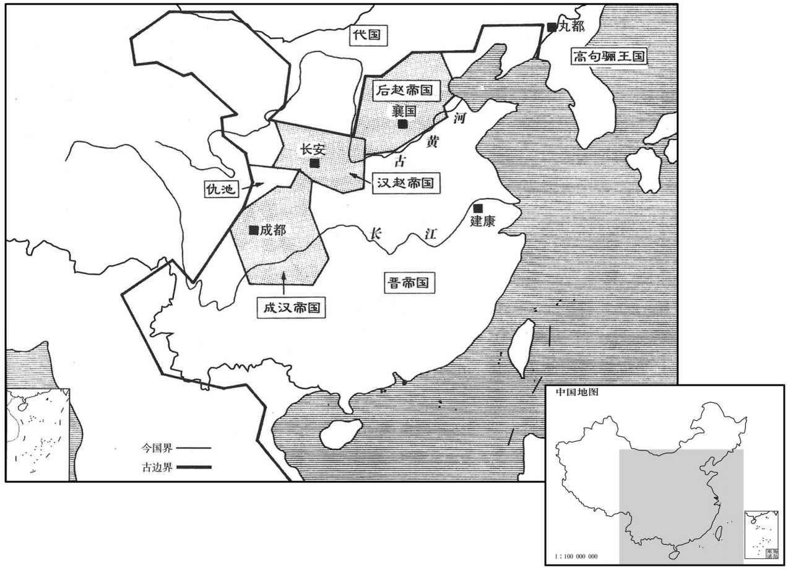
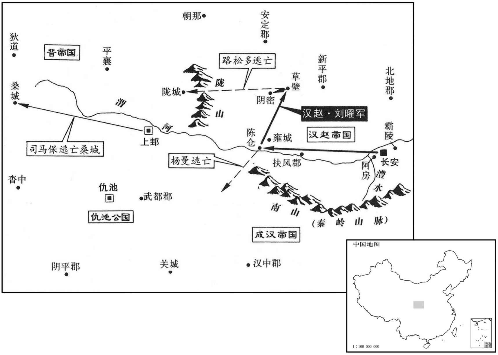
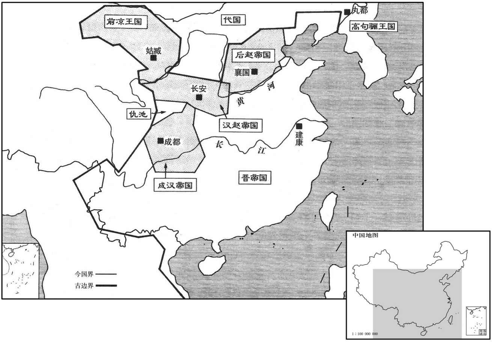
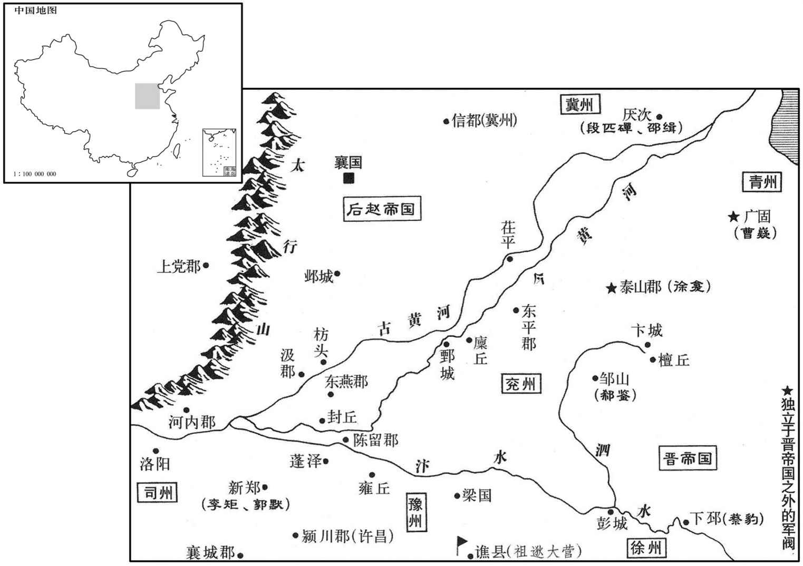

卷次与人物目录 / 卷91
资治通鉴 · 卷第九十一【晋纪十三】
公元319年至公元321年 · 原文、白话与胡三省注
本页按胡注本编排保存全卷内容。白话采用本站所据译本，未可靠对应的内容另列说明；事件标题用于定位，并非原书文字。
本卷共79段原文，79段有译文对应，0段缺译或待核对。
卷第九十一【晋纪十三】起屠维单阏（己卯），尽重光大荒落（辛巳），凡三年。
卷首原文与注释
中宗元皇帝中
公元319年 · 晋中宗元皇帝太兴二年
太兴二年〔（己卯、三十九）〕
上传原文件年头的数字有误；按本卷年号与相邻年份定位为319年，原字保留。
本年事件索引（现代整理）
- 刘遐、徐龛在寒山攻击周抚，攻破并杀死周抚
- 石勒与前赵反目，诛杀曹平乐
- 元帝令群臣商议郊祀之事
- 蓬陂坞主陈川自称陈留太守，祖逖攻樊雅之时
- 周抚败逃时
- 汉主刘曜回到长安，定都于此
- 南阳王司马保自称晋王，改年号为建康
- 江南发生严重饥荒，元帝下诏让百官各自上书奏事
- 祖逖在蓬关攻陈川，石勒派石虎率兵五万救援
- 石勒遣石虎在朔方重创鲜卑族日六延，斩首二万
- 曹嶷派使者给石勒送去财物，请求以黄河作为分界
- 周访击败杜曾并平定荆州
- 魏该被胡族敌寇所逼迫，从宜阳率领部众向南迁徙到新野
- 赵固死，郭诵屯军阳翟
- 刘曜改汉国号为赵
- 徐龛寇掠济水、泰山之间，攻破东莞
- 石勒即赵王位并建赵国
- 石勒整顿律令并制定胡汉治理制度
- 张宾得到的职位高等入朝时直言规谏
- 东晋大赦天下
- 平州刺史崔毖自以为在中州享有声望，现在镇守辽东
- 高句丽、段氏、宇文氏三国合兵攻伐慕容
- 三军攻棘城，慕容闭门固守
- 宇文氏士卒有数十万，营寨相连有四十里
- 慕容翰设伏击败宇文部
- 慕容廆击败三国并迫使崔毖出奔
- 慕容廆招抚高瞻等辽东士人
- 鞠羡已死，苟又让鞠羡的儿子鞠彭任东莱太守
- 宋该劝慕容向江南晋王室献俘、告捷
- 高句丽多次侵扰辽东，慕容让慕容翰、慕容仁领军攻伐
- 这年，蒲洪投降前赵
- 屠各部落的路松多起兵于新平等归附晋王司马保

本年形势与背景参考图
春，二月，刘遐、徐龛击周抚于寒山，破斩之。〔魏收地形志，彭城郡彭城县有寒山。龛，苦含翻。〕初掖人苏峻帅乡里数千家结垒以自保，远近多附之。〔掖县，属东莱郡。苏峻传云，长广掖人。据志，长广郡有挺县，无掖县。帅，读曰率。〕曹嶷恶其强，将攻之，峻率众浮海来奔。〔嶷，鱼力翻。恶，乌路翻。〕帝以峻为鹰扬将军，〔沈约志：鹰扬将军，建安中，曹公以命曹洪。〕助刘遐讨周抚有功；诏以遐为临淮太守，峻为淮陵内史。〔惠帝元康七年，分临淮置淮陵郡，其地当在唐沂州临沂县界。宋白曰：泗洲招信县，本汉淮陵县。〕
春季，二月，刘遐、徐龛在寒山攻击周抚，攻破并杀死周抚。当初，掖县人苏峻率领乡里数千家民众营造壁垒自保，远近民众大多附从。曹嶷恨苏峻势力强大，准备攻击他，苏峻率部众渡海投奔东晋。元帝任苏峻为鹰扬将军，因为帮助刘遐讨伐周抚有功，下诏任刘遐为临淮太守，苏浚为淮陵内史。
石勒遣左长史王修献捷于汉，汉主曜遣兼司徒郭汜授勒太宰、领大将军，封列侯。修舍人曹平乐从修至粟邑，〔乐，音洛。〕因留仕汉，言于曜曰：「大司马遣修等来，〔曜初即位，以勒为大司马，故称之。〕外表至诚，内觇大驾强弱，俟其复命，将袭乘舆。」〔觇，丑廉翻。乘，绳证翻。〕时汉兵实疲弊，曜信之。乃追汜还，斩修于市。三月，勒还至襄国。刘茂逃归，言修死状。勒大怒曰：「孤事刘氏，于人臣之职有加矣。彼之基业，皆孤所为，今既得志，还欲相图。赵王、赵帝，孤自为之，何待于彼邪！」乃诛曹平乐三族。〔为刘、石相攻张本。〕
两版字句有差异，建议核对原文。
[[2]石勒派左长史王向汉主献俘告捷，汉主刘曜派兼司徒郭汜授石勒为太宰、领大将军，晋升爵位为赵王，给予特殊礼遇，出入宫禁，如同曹操辅佐汉室的旧制。拜王和他的副将刘茂为将军，封为列侯。王的舍人曹平乐随从王到粟邑，顺势留在汉国做官，他对刘曜说：“大司马石勒派王等人前来，外表至为忠诚，实则是窥察您的强弱，等他回去报告后，将要袭击您。”当时汉军的确疲敝，刘曜相信了曹平乐所言，于是命人追回郭汜，在街市上杀了王。三月，石勒回到襄国。刘茂逃回，告知王死的情况，石勒大怒，说：“孤侍奉刘氏，已经超过了臣下该尽的本职。刘氏的基业，都是我所创下的。现在他志得意满，却反过来想算计我。赵王、赵帝，孤自己就能做，哪里还要等他呢！”于是诛杀曹平乐三族。
帝令群臣议郊祀，尚书令刁协等以为宜须还洛乃修之。司徒荀组等曰：「汉献帝都许，即行郊祀，〔范书，汉献帝建安元年，郊祀上帝于安邑；是年七月，至洛阳，复郊祀上帝；八月，迁许，无郊祀之事，或别见他书也。晋书礼志载组议云：献帝迁许，即便立郊。盖郊祀不在迁许之年也。〕何必洛邑！」帝从之，立郊丘于建康城之巳地。辛卯，帝亲祀南郊。以未有北郊，〔按：成帝咸和八年，始于覆舟山南立北郊。〕并地祇合祭之。诏：「琅邪恭王宜称皇考，」贺循曰：「礼，子不敢以己爵加于父，」〔此前汉师丹引礼以为言，事见三十三卷汉哀帝建平元年。〕乃止。
元帝令群臣商议郊祀之事，尚书令刁协等人认为应该等还都洛阳之后再举行。司徒荀组等人说：“汉献帝迁都许昌，马上便举行郊祀，又何必等回到洛邑时！”元帝听从了荀组等人意见，在建康城的巳地建立郊祀园丘。辛卯（二十日），元帝亲自到南郊祭天，因为还没有北郊，所以连同地祗合并祭祀。元帝下诏说：“琅邪恭王应当称作皇考。”贺循说：“根据《礼》，儿子不敢把自己的爵位加在父亲身上。”于是停止执行。
初，蓬陂坞主陈川〔蓬陂，即左传之蓬泽，在浚仪县。〕自称陈留太守。〔守，式又翻。〕祖逖之攻樊雅也，川遣其将李头助之。头力战有功，逖厚遇之。头每叹曰：「得此人为主，吾死无恨。」川闻而杀之。头党冯宠帅其众降逖，川益怒，大掠豫州诸郡，逖遣兵击破之。夏，四月，川以浚仪叛，降石勒。〔浚仪县，属陈留郡，故大梁也。帅，读曰率。降，户江翻；下同。〕
当初，蓬陂坞主陈川自称陈留太守，祖逖攻打樊雅之时，陈川派部将李头助战。李头力战建功，祖逖对他另眼相看。李头常常感叹说：“能得到祖 逖做自己的主公，我死无遗憾。”陈川听说，杀了李头。李头的党徒冯宠率领
部众投降祖逖，陈川更加恼怒，大肆攻掠豫州诸郡，祖逖派兵打败了他。夏季，四月，陈川占据浚仪背叛，投降石勒。
周抚之败走也，徐龛部将于药追斩之；及朝廷论功，而刘遐先之。〔先，悉荐翻。〕龛怒，以泰山叛，降石勒，自称兖州刺史。
周抚败逃时，是徐龛的部将于药追上并杀了周抚，等到朝廷论功时，却是刘遐占先。徐龛生气，占据泰山背叛，投降石勒，自称兖州刺史。
汉主曜还，都长安，〔自粟邑还长安，遂定都也。〕立妃羊氏为皇后，〔即惠帝羊皇后。曜纳羊后，见八十七卷怀帝永嘉五年。〕子熙为皇太子；封子袭为长乐王，〔乐，音洛。〕阐为太原王，冲为淮南王，敞为齐王，高为鲁王，徽为楚王；诸宗室皆进封郡王。羊氏，即故惠帝后也。曜尝问之曰：「吾何如司马家儿﹖」羊氏曰：「陛下，开基之圣主；彼，亡国之暗夫；何可并言！彼贵为帝王，有一妇、一子及身三耳，曾不能庇。妾于尔时，实不欲生，意谓世间男子皆然。自奉巾栉已来，始知天下自有丈夫耳。」曜甚宠之，颇干预国事。
汉主刘曜回到长安，定都于此，立后妃羊氏为皇后，儿子刘熙为太子。封儿子刘袭为长乐王，刘阐为太原王，刘冲为淮南王，刘敞为齐王，刘高为鲁王，刘徽为楚王，各宗室子弟都进封郡王。羊氏就是过去晋惠帝的皇后。刘曜曾经问她说：“我比起司马家的孩子怎么样？”羊氏说：“陛下是开基的圣主，他是亡国的昏君，怎么能相提并论！他贵为帝王时，只有一个夫人、一个孩子和他自己三个人，竟然都不能庇护。我在那时实在是不想活了，以为世上的男人都是这样。自从做了您的妻子，才知道天下自有大丈夫。”刘曜非常宠爱她，羊氏常干预国事。
南阳王保自称晋王，改元建康，置百官，以张寔为征西大将军。开府仪同三司。陈安自称秦州刺史，降子汉，又降于成。上邽大饥，士众困迫，张春奉保之南安祁山。〔之，往也。〕寔遣韩璞帅步骑五千救之；陈安退保鼦诸，〔鼦诸道，前汉属天水郡，后汉、晋省。水经注：鼦诸水，历鼦诸故道北，东南入清水，清水东南注渭。〕保归上邽。未几，保复为安所逼，〔几，居岂翻。复，扶又翻。〕寔遣其将宋毅救之，安乃退。
南阳王司马保自称晋王，改年号为建康，设置百官，任张为征西大将军，开府仪同三司。陈安自称秦州刺史，投降汉，后又投降成汉。上发生严重饥荒，士民困迫，张春侍奉司马保去南安的祁山。张派遣韩璞率领步、骑兵五千救援司马保，陈安退守绵诸，司马保回到上。不久，司马保又被陈安进逼，张派部将宋毅救援，陈安才退军。
江东大饥，诏百官各上封事。益州刺史应詹上疏曰：〔詹自益州刺史还建康。〕「元康以来，贱经尚道，以玄虚夕放为夷达，〔夷，旷也。〕以儒术清俭为鄙俗，宜崇奖儒官，以新俗化。」
江南发生严重饥荒，元帝下诏让百官各自上书奏事。益州刺史应詹上疏说：“自元康年间以来，轻视经典，崇尚道学，把玄虚弘放视作平达，把儒术、清俭看作鄙俗，应当尊崇和奖掖儒官，来革新风俗教化。”
祖逖攻陈川于蓬关，石勒遣石虎将兵五万救之，战于浚仪，逖兵败，退屯梁国。勒又遣桃豹将兵至蓬关，逖退屯淮南。〔此淮南郡，治寿春。〕虎徙川部众五千户于襄国，留豹守川故城。
祖逖在蓬关进攻陈川，石勒派石虎率兵五万救援，两军在浚仪交战，祖逖兵败，退军驻屯梁国。石勒又派桃豹率兵到达蓬关，祖逖退守淮南。石虎将陈川部众五千户迁徙到襄国，留下石豹守卫陈川故城。
石勒遣石虎击鲜卑日六延于朔方，大破之，斩首二万级，俘虏三万余人。孔苌攻幽州诸郡，悉取之。段匹磾士众饥散、欲移保上谷，〔晋志：上谷郡，治沮阳县；秦置郡，在谷之上头，故名焉。〕代王郁律勒兵将击之，匹磾弃妻子奔乐陵，依邵续。〔乐陵郡，治厌次，续保之以奉晋。〕
石勒派遣石虎在朔方重创鲜卑族日六延，斩首二万，俘虏三万多人。孔苌攻取了幽州诸郡。段匹的士众因饥饿离散，段匹想移军保守上谷，代王郁律领兵准备攻击他，段匹丢弃妻子儿女逃奔乐陵，依附邵续。
曹嶷遣使赂石勒，请以河为境，勒许之。〔嶷已缘河置戍矣，今赂勒请以河为境者，惧勒之侵轶也。〕
曹嶷派使者给石勒送去财物，请求以黄河作为分界，石勒答应了。
梁州刺史肚访击杜曾，大破之。马隽等执曾以降，访斩之；并获荆州刺史第五猗，送于武昌。访以猗本中朝所署，〔朝，直遥翻。〕加有时望，白王敦不宜杀，敦不听而斩之。〔猗从杜曾事，始八十九卷愍帝建兴四年。〕初，敦患杜曾难制，谓访曰：「若擒曾，当相论为荆州。」及曾死而敦不用。王廙在荆州，〔廙，羊至翻，又逸职翻。〕多杀陶侃将佐；〔将，即亮翻。〕以皇甫方回为侃所敬，责其不诣己，收斩之。士民怨怒，上下不安。帝闻之，征廙为散骑常侍，以周访代廙为荆州刺史。王敦忌访威名，意难之。从事中郎郭舒说敦曰：「鄙州虽荒弊，乃用武之国，不可以假人，宜自领之，〔郭舒，先在荆州，历事刘弘、王澄。说，输芮翻。〕访为梁州足矣。」敦从之。六月，丙子，诏加访安南将军，余加故。访大怒，敦手书譬解，并遗玉环、玉苈以申厚意。〔遗，于季翻。〕访抵之于地，曰：「吾岂贾竖，可以宝悦邪！」〔贾，音古。〕访在襄阳，务农训兵，阴有图敦之志，守宰有缺辄补，然后言上；〔上，时掌翻。〕敦患之而不能制。
梁州刺史周访进攻杜曾，大胜。马隽等人抓住杜曾投降，周访斩杀杜曾。并抓获荆州刺史第五猗，送往武昌。周访因为第五猗本是朝廷任命，而且有一定声望，告诉王敦最好不要杀他，王敦不听，杀了第五猗。当初，王敦忧虑杜曾难以控制，对周访说：“如果能擒获杜曾，我将论功让你治理荆州。”等到杜曾死后，王敦不用周访。王在荆州，杀了许多陶侃的将佐，因为皇甫方回是陶侃所敬重的人，王责怪他不拜诣自己，把他拘捕杀害。士人民众因此怨怒，上下关系紧张。元帝听说这件事，征召王任散骑常侍，让周访代替王任荆州刺史。王敦嫉妒周访有威名，有意为难。从事中郎郭舒劝王敦说：“本州虽然荒凉凋敝，却是用武之地，不可以让人占有，应当自己管辖。周访治理梁州就够了。”王敦听从了他的话。六月，丙子（初七），元帝下诏授予周访安南将军，其余职务不变。周访大为恼怒。王敦亲自写信劝解，并赠玉环、玉碗表示看重之意。周访扔在地上，说：“我难道是商人和小孩吗？怎么可以用宝物来让我高兴呢！”周访在襄阳发展农业、训练士卒，暗藏谋算王敦的心志。官吏有缺员就自行补录，然后才上报。王敦对他深以为患但又不能控制他。
魏该为胡寇所逼，自宜阳率众南迁新野，〔魏该自怀帝末屯宜阳界一泉坞。宜阳县，属弘农郡。新野县，汉属南阳郡，晋属义阳郡。〕助周访讨杜曾有功，拜顺阳太守。
魏该被胡族敌寇所逼迫，从宜阳率领部众向南迁徙到新野，因帮助周访讨伐杜曾有功，被拜为顺阳太守。
赵固死，郭诵留屯阳翟，〔阳翟县，汉属颍川郡，晋属河南郡。〕石生屡攻之，不能克。
赵固死，郭诵屯军阳翟，石生多次进攻，不能取胜。
汉主曜立宗庙、社稷、南北郊于长安，诏曰：「吾之先，兴于北方。光文立汉宸庙以从叱望。〔见八十五卷惠帝永兴元年。〕今宜改国号，以单于为祖。亟议以闻！」群臣奏：「光文始封卢奴伯，〔晋成都王颖封刘渊为卢奴伯。〕陛下又王中山；中山，赵分也，〔王，于况翻。分，扶问翻。〕请改国号为赵。」从之。以冒顿配天，〔冒，莫北翻。〕光文配上帝。
汉主刘曜在长安建立宗庙、社稷和南郊、北郊，下诏说：“我的祖先从北方开始兴盛，光文建立汉国宗庙是为了顺从民众愿望。现在应当改国号，奉单于为祖。尽快论议上报！”群臣上奏说：“光文最早受封卢奴伯，陛下又曾在中山称王。中山本是赵国领土，请求改国号为赵。”刘曜听从，将冒顿配祀上天，光文配祀上帝。
徐龛寇掠济、岱，〔岱，泰山也。龛寇掠济、岱之间。济，子礼翻。〕破东莞。〔沈约志：武帝太康元年，分琅邪立东莞郡。晋志：东莞，故鲁郓邑。刘昫曰：唐沂州沂水县，汉东莞县地。宋白曰：春秋莒、鲁争郓。杜预注云：城阳姑幕县南，有员亭，即郓也，俗变其字耳。十三州志云：有东、西二郓，鲁昭公所居者为西郓，兖州东平郡是也；莒、鲁所争者为东郓，汉东莞县是也。莞，音官。〕帝问将帅可以讨龛者于王导，〔将，即亮翻。帅，所类翻。〕导以为太子左卫率泰山羊鉴，龛之州里冠族，〔冠，古玩翻。〕必能制之。鉴深辞，才非将帅；郗鉴亦表鉴非才，不可使；导不从。秋，八月，以羊鉴为征虏将军、征讨都督，督徐州刺史蔡豹、临淮太守遐、鲜卑段文鸯等讨之。〔段文鸯时从其兄匹磾在厌次。〕
徐龛寇掠济水、泰山之间，攻破东莞。元帝向王导询问将帅中有谁能够征讨徐龛，王导认为太子左卫率泰山人羊鉴，是徐龛州里的显贵豪族，必能制服徐龛。羊鉴恳切地推辞，认为自己不是将帅之才；郗鉴也上表认为羊鉴不是合适的人选，不能委派，王导不听。秋季，八月，任羊鉴为征虏将军、征讨都督，总领徐州刺史蔡豹、临淮太守刘遐、鲜卑部段文鸯等讨伐徐龛。
冬，石勒左、右长史张敬、张宾，左、右司马张屈六、程遐等劝勒称尊号，勒不许。十一月，将佐等复请勒称大将军、大单于、领冀州牧、赵王，〔复，扶又翻。单，音蝉。〕依汉昭烈在蜀、魏武在邺故事，以河内等二十四郡为赵国，太守皆为内史，准禹贡，复冀州之境，〔时以河内、魏、汲、顿丘、平原、清河、巨鹿、常山、中山、长乐、乐平、赵国、广平、阳平、章武、勃海、河间、上党、定襄、范阳、渔阳、武邑、燕国、乐陵二十四郡为赵国。准禹贡，魏武复冀州之境，南至孟津，西达龙门，东至于河，北至塞垣。〕以大单于镇抚百蛮，罢并、朔、司三州，〔晋未尝置朔州；此罢朔州，未知谁所置也。〕通置部司以监之；勒许之。戊寅，即赵王位，〔石勒，字世龙。〕大赦；依春秋时列国称元年。
冬季，石勒的左、右长史张敬、张宾，左、右司马张屈六、程遐等劝石勒称皇帝尊号，石勒不同意。十一月，将佐们又请求石勒称大将军、大单于、领冀州牧、赵王，依照蜀汉昭烈帝刘备在蜀、魏武帝曹操在邺的旧例，以河内等二十四郡为赵国，太守都改为内史，根据《尚书·禹贡》，恢复冀州的行政区划，以大单于的身份镇抚众蛮族；撤销并州、朔州、司州的建置，合置部司监管，石勒同意了。戊寅（疑误），石勒即后赵王位，大赦天下，依照春秋时列国旧例称元年。
初，勒以世乱，律令烦多，命法曹令史贯志，〔贯，姓也；志，其名。〕采集其要，作辛亥制五千文；施行十余年，乃用律令。以理曹参军上党续咸为律学祭酒；〔姓谱：帝舜七友有续牙。曰晋大夫狐鞫居食采于续，号续简伯，后以为氏。〕咸用法详平，国人称之。以中垒将军支雄、〔中垒将军，后赵创置。〕游击将军王阳领门臣祭酒，〔勒置经学祭酒、律学祭酒、史学祭酒、门臣祭酒。〕专主胡人辞讼，重禁胡人，不得陵侮衣冠华族，〔华族，中华之族也。勒，胡人也，能禁其丑类，不使陵暴华人及衣冠之士，晋文公初欲俘阳樊之民，殆有愧焉。〕号胡为国人。遣使循行州郡，劝课农桑。朝会，始用天子礼乐，衣冠、仪物，从容可观矣。〔朝，直遥翻。从，千容翻。〕加张宾大执法，专总朝政；〔朝，直遥翻；下同。〕以石虎为单于、元辅、都督禁卫诸军事，寻加骠骑将军、侍中、开府，赐爵中山公；〔骠，匹妙翻。〕自余群臣，授位进爵各有差。
当初，石勒因为世事紊乱，律令烦多，命法曹令史贯志采撷纲要，作《辛亥制》五千字，施行十多年，才用律令。任理曹参军上党人续咸为律学祭酒，续咸运用法律细致、公平，受到国人的称赞。任用中垒将军支雄、游击将军王阳兼门臣祭酒，专管胡人的诉讼，严厉禁止胡人，不许他们欺陵污辱具有较高文化的汉人，把胡人称作国人。派遣使者巡行州郡，鼓励、督促农业生产。朝会时开始用天子的礼乐，衣冠、仪物都充足可观。升张宾为大执法，专门总理朝政，任石虎为单于元辅、都督禁卫各种军务，不久又担任骠骑将军、侍中、开府，赐爵为中山公。其余群臣，授官进爵各有等次。
张宾任遇优显，群臣莫及；而谦虚敬慎，开怀下士，屏绝阿私，〔屏，必郢翻。〕以身帅物，〔帅，读曰率。〕入则尽规，出则归美。勒甚重之，每朝，常为之正容貌，简辞令，呼曰右侯而不敢名。〔史言张宾有大臣之节，所以膺石勒之体貌。为，于伪翻。〕
张宾得到的职位高、待遇优厚，群臣没有可比拟的；但他本人却谦虚、恭敬、小心，真诚地折节下士，杜绝私情，以身作则，入朝时直言规谏，出外却将美誉归功于主上，石勒非常看重他。每次上朝，经常因为张宾的缘故端正容貌，修饰辞令，以右侯称呼张宾，不叫他的名字。
十二月，乙亥，大赦。
十二月，乙亥（初九），东晋大赦天下。
平州刺史崔毖，自以中州人望，镇辽东，〔毖，崔琰之曾孙。琰在魏时，为冀州人士之首，子孙遂为冀州冠族。毖，音秘。〕而士民多归慕容廆，〔廆，户罪翻。〕心不平。数遣使招之，皆不至，〔数，所角翻。〕意廆拘留之，乃阴说高句丽、段氏、宇文氏，使共攻之，〔说，输芮翻。句，音如字，又音驹。丽，力知翻。〕约灭廆，分其地。毖所亲勃海高瞻力谏，毖不从。
平州刺史崔毖自以为在中州享有声望，现在镇守辽东，而士民却大多归附慕容，心中不服。多次派遣使者招纳士民，但他们全都不来。崔毖怀疑是慕容羁留他们，于是暗地游说高句丽、段氏和宇文氏，让他们共同攻伐慕容，约定翦灭慕容后，共同瓜分他的辖地。崔毖的亲信、勃海人高瞻极力劝谏，崔毖不听。
三国合兵伐廆，诸将请击之，廆曰：「彼为崔毖所诱，欲邀一切之利。军势初合，其锋甚锐，不可与战，当固守以挫之。彼乌合而来，〔飞乌见食，群集而聚啄之，人或惊之，则四散飞去；故兵以利合无所统一者谓之乌合。〕既无统壹，莫相归服，久必携贰，一则疑吾与毖诈而覆之，二则三国自相猜忌。待其人情离贰，然后击之，破之必矣。」
高句丽、段氏、宇文氏三国合兵攻伐慕容，慕容部下众将请战，慕容说：“他们被崔毖诱惑，想乘机谋利。军势刚刚会合，锋头正锐，现在不能和他们交战，应当固守以挫其锐气。他们乌合前来，既没有统一的号令，互相之间又不服气，时间久了必然产生二心，一来怀疑我和崔毖共使欺诈，想消灭他们；二来三国之间也互相猜忌。等到他们人心离散，然后进攻，一定能打败他们。”
三国进攻棘城，廆闭门自守，遣使独以牛酒犒宇文氏；〔使，疏吏翻。犒，苦告翻。〕二国疑宇文氏与廆有谋，各引兵归。〔兵法所谓合则能离之，慕容廆有焉。〕宇文大人悉独官曰：「二国虽归，吾当独取之。」
三国军队进攻棘城，慕容闭门固守，派遣使者单独用牛和酒犒劳宇文氏。高句丽和段氏怀疑宇文氏与慕容勾结，各自领军退还。宇文氏首领悉独官说：“高句丽和段氏虽然回去，我要独自攻取慕容。”
宇文氏士卒数十万，连营四十里。廆使召其子翰于徒河。〔翰自愍帝建兴元年镇徒河。〕翰遣使白廆曰：「悉独官举国为寇，彼众我寡，易以计破，难以力胜。今城中之众，足以御寇，翰请为奇兵于外，伺其间而击之，〔间，古苋翻；下同。〕内外俱奋，使彼震骇不知所备，破之必矣。今井兵为一，彼得专意攻城，无复他虞，〔虞，防也，备也。复，扶又翻；下同。〕非策之得者也；且示众以怯，恐士气不战先沮矣。」〔沮，在莒翻。〕廆犹疑之。辽东韩寿言于廆曰：「悉独官有凭陵之志，将骄卒惰，军不坚密，若奇兵卒起，〔卒，读曰猝。〕掎其无备，必破之策也。〔掎，举绮翻。偏引曰掎，又从后牵曰掎。〕廆乃听翰留徒河。
宇文氏士卒有数十万，营寨相连有四十里。慕容派人从徒河征召儿子慕容翰。慕容翰派遣使者告诉慕容说：“ 悉独官倾国来犯，敌众我寡，易于智取，难以力敌。现在城中的军队，已足以防御，我请求作为外面的奇兵，伺机攻击，内外同时发兵，使他们惊骇而不知道如何防备，这样一定能打败他们。如果现在把兵力集中在一处，他们便能专心攻城，没有其他顾虑，这不是合适的对策。而且这是向民众表示内心的怯惧，恐怕还没作战士气就要先丧失了。”慕容犹疑不决。辽东人韩寿对慕容说：“悉独官有侵凌进逼的志向，将领骄纵，士卒惫惰，军队组织松散，如果使用奇兵突然发难，在他们没有防备时实施攻击，这是必定取胜的策略。”慕容这才同意慕容翰留在徒河。
悉独官闻之曰：「翰素名骁果，〔骁，坚尧翻。〕今不入城，或能为患，当先取之，城不足忧。」乃分遣数千骑袭翰。翰知之，诈为段氏使者，逆于道曰：「慕容翰久为吾患，闻当击之，吾已严兵相待，宜速进也。」使者既去，翰即出城，设伏以待之。宇文氏之骑见使者，大喜驰行，不复设备，进入伏中。翰奋击，尽获之，乘胜径进，遣间使语廆出兵大战。〔投间隙而行，故谓之间使。间，古苋翻。〕廆使其子皝与长史裴嶷将精锐为则锋，〔皝，呼广翻。〕自将大兵继之。悉独官初不设备，闻廆至，惊，悉众出战。前锋始交，翰将千骑从旁直入其营，纵火焚之，〔将，即亮翻。〕众皆惶扰，不知所为，遂所为，遂大败，悉独官仅以身免。廆尽俘其众，获皇帝玉玺三纽。〔皇帝玺，即宇文大人普回出猎所得者。玺，斯氏翻。〕
悉独官听说慕容翰留在徒河，说：“慕容翰素来以骁勇果敢闻名，现在不进城，或许会成为祸患，应当先攻取他，城里不足为患。”于是分出数千骑兵攻击慕容翰。慕容翰得知此事，派人假扮成段氏的使者，在路上迎住悉独官的骑兵，对他们说：“慕容翰长久以来就是我心头之患，听说你们将要进攻他，我们已严阵以待，你们可以快速前进。”使者离开以后，慕容翰立即出城，设下埋伏等待宇文氏的军队。宇文氏的骑兵见到使者，大为高兴，骑马驰行，不再防备，进入了伏击圈中。慕容翰突然攻击，全部俘获了他们。又乘胜进军，同时派遣密使告诉慕容，让他出兵大战。慕容令其子慕容和长史裴嶷率领精锐士卒为前锋，自己统领大军随后。悉独官原先没有设防，听说慕容来了，大惊，倾巢出战。两军前锋刚刚交战，慕容翰率领千余骑兵从旁侧直冲入悉独官军营，纵火焚烧。悉独官的士卒都惶恐不安，不知所措，结果大败，悉独官只身逃脱。慕容尽数俘获他的士众，缴获到皇帝玉玺三纽。
崔毖闻之，惧，使其兄子焘诣棘城伪贺。会三国使者亦至，请和，曰：「非我本意，崔平州教我耳。」廆以示焘，临之以兵，焘惧，首服。〔首，式救翻。〕廆乃遣焘归谓毖曰：「降者上策，走者下策也。」引兵随之。毖与数十骑弃家奔高句丽，其众悉降于廆。〔降，户江翻。〕廆以其子仁为征虏将军，镇辽东，〔为仁以辽东与皝争国张本。〕官府、市里，按堵如故。
崔毖听说此事，心中恐惧，让他兄长之子崔焘到棘城假装祝贺。正巧高句丽、宇文氏、段氏三国使者也来请和，都说：“我们本来并不想与你为敌，是崔毖让我们这么做的。”慕容让崔焘见三国使者，执刀相对，崔焘害怕，低头臣服。慕容便让崔焘回去对崔毖说：“投降是上策，逃跑是下策，”并带兵随后而行。崔毖带着数十骑弃家逃奔高句丽，部众全部投降慕容。慕容任儿子慕容仁为征虏将军，镇守辽东，官府、市里，一仍其旧。
高句丽将如奴子据于河城，廆遣将军张统掩击，擒之，俘其众千余家；以崔焘、高瞻、韩恒、石琮归于棘城，待以客礼。恒，安平人；琮，鉴之孙也。〔石鉴事武帝、惠帝，位通显。〕廆以高瞻为将军，瞻称疾不就，廆数临候之，〔数，所角翻。〕抚其心曰：「君之疾在此，不在他也。今晋室丧乱，孤欲与诸君共清世难，〔丧，息浪翻。难，乃旦翻。〕翼戴帝室。君中州望族，宜同斯愿，柰何以华、夷之异，介然疏之哉！〔介然，坚正不移之貌。〕夫立功立事，惟问志略何如耳，华、夷何足问乎！」〔以瞻薄廆起于东夷，不肯委身事之，故有是言。〕瞻犹不起，廆颇不平。龙骧主簿宋该，与瞻有隙，〔廆进号龙骧将军，以该为府主簿。骧，思将翻。〕劝廆除之，廆不从。瞻以忧卒。
高句丽将领如奴子占据于河城，慕容派将军张统突然袭击，擒获如奴子，俘虏部众一千多家。因为崔焘、高瞻、韩恒、石琮归附棘城，慕容以客人的礼节对待他们。韩恒是安平人，石琮是石鉴的孙子。慕容任高瞻为将军，高瞻以有病为由不干。慕容多次亲临问侯，抚摸他的心口说：“您的病在这儿，不在别处。现在晋王室丧乱，孤想和诸君共同廓清世上的灾难，辅翼、拥戴帝室。您是中州的名门望族，应当与我同有此愿，为何因为华夏、夷族的区别，便耿耿于怀，故意疏远呢！至于立功成事，只问志向、谋略怎样便可以了，何须再问是华夏还是夷族呢！”高瞻还是不肯出来做官，慕容心中颇为忿忿不平。龙骧主簿宋该与高瞻有矛盾，劝慕容除去高瞻，慕容没有听从。高瞻因忧虑而死。
初，鞠羡既死，〔鞠羡死见八十六卷怀帝永嘉元年。〕苟晞复以羡子彭为东莱太守。〔复，扶又翻。〕会曹嶷徇青州，〔事见八十七卷永嘉三年。嶷，鱼力翻。〕与彭相攻；嶷兵虽强，郡人皆为彭死战，〔为，于伪翻。〕嶷不能克。久之，彭叹曰：「今天下大乱，强者为雄。曹亦乡里，〔彭与嶷皆齐人。〕为天所相，〔相，悉亮翻。〕苟可依凭，即为民主，何必与之力争，使百姓肝脑涂地！吾去此，则祸自息矣。」郡人以为不可，争献拒嶷之策，一无所用，与乡里千余家浮海归崔毖。北海郑林客于东莱，彭、嶷之相攻，林情无彼此。嶷贤之，不敢侵掠，彭与之俱去。比至辽东，〔比，必寐翻。〕毖已败，乃归慕容廆。廆以彭参龙骧军事。遗郑林车牛粟帛；〔遗，于季翻。〕皆不受，躬耕于野。
当初，鞠羡已死，苟又让鞠羡的儿子鞠彭任东莱太守。适逢曹嶷到青州巡行，和鞠彭相互攻击。曹嶷的军队虽强，但郡民都为鞠彭拼命死战，曹嶷不能取胜。相持日久，鞠彭叹息说：“现在天下大乱，强大者是英雄。曹嶷也是同乡之人，有天相助。只要可以依靠，便可为民众主宰，何必和他力争，使老百姓肝脑涂地呢！我离开这里，战祸就会自然停止。”郡里人民都认为这样不行，争相进献抵抗曹嶷的计谋，鞠彭一个不用，随同乡里数千家民众渡海归附崔毖。北海人郑林旅居东莱，对于鞠彭、曹嶷之间的争斗，无所偏向。曹嶷认为他有贤德、不敢侵犯、劫掠。鞠彭和他一同离开。到了辽东，崔毖已经失败，鞠彭等于是归附慕容。慕容让鞠彭参与龙骧军事。赠送郑林车乘、服牛、粟谷、布帛，郑林都不接受，亲自在田野里耕种。
宋该劝廆献江东，廆使该为表，裴嶷奉之，并所得三玺诣建康献之。
宋该劝慕容向江南晋王室献俘、告捷。慕容派宋该撰写上表，让裴嶷奉持，连同得到的三个玉玺，一起送到建康进献。
高句丽数寇辽东，〔句，如字，又音驹。丽，力知翻。数，所角翻。〕廆遣慕容翰、慕容仁伐之；高句丽王乙弗利逆来求盟，翰、仁乃还。〔还，从宣翻。又如字。〕
高句丽多次侵扰辽东，慕容让慕容翰、慕容仁领军攻伐。高句丽国王乙弗利迎上请求缔结盟约，慕容翰、慕容仁这才回师。
是岁，蒲洪降赵，〔考异曰：三十国、晋春秋，洪降刘曜在太兴元年。按元年曜未都长安。晋书洪载记无年，但云「曜僭号长安，洪归曜」，故置是年。〕赵主曜以洪为率义侯。
这年，蒲洪投降前赵，前赵主刘曜封蒲洪为率义侯。
屠各路松多起兵于新平、扶风以附晋王保，〔屠，直于翻。〕保使其将杨曼、王连据陈仓，张顗、周庸据阴密，松多据草壁，〔水经注：陇山西南，降陇城北，有松多州，盖松多据此，因以为地名。草壁，在阴密之东。顗，鱼岂翻。〕秦、陇氐、先多应之。赵主曜遣诸将攻之，不克；曜自将击之。〔将，即亮翻。〕
屠各部落的路松多起兵于新平、扶风，归附晋王司马保。司马保派部将杨曼、王连占据陈仓，张、周庸占据阴密，路松多占据草壁，秦州、陇州的氐人和羌人大多响应他们。前赵主刘曜派遣多员将领攻伐，不能取胜，刘曜准备自己亲征。
公元320年 · 晋中宗元皇帝太兴三年
三年〔（庚辰、三二○）〕
上传原文的注释括号有异常，字符原样保留；无法可靠划分的段落默认全文显示。
本年事件索引（现代整理）
- 刘曜攻陈仓，王连战死
- 张春筹划侍奉晋王司马保逃奔凉州
- 段末击败擒获段匹磾
- 吏部郎刘胤听说邵续受到攻击，向元帝上言进言
- 前赵将军尹安等叛国投降后赵
- 裴嶷到达建康，盛赞慕容有威德
- 晋任周为尚书左仆射
- 张春杀晋王司马保，陈安讨平
- 羊鉴征讨徐龛，在下邳停兵
- 后赵孔苌攻段匹，恃仗取得的胜利便不再防备
- 刘弘妖言惑众，刺杀张寔
- 刘曜滥杀引发巴氐羌羯反叛
- 游子远赦叛平乱并击败氐王伊余
- 刘曜兴办太学并停止奢侈营建
- 祖逖以疑兵迫退桃豹
- 以前，赵固、上官已、李矩、郭默等人互相攻战
- 祖逖练兵积谷，后赵与晋边境暂和
- 周访病卒，王敦暂敛逆谋
- 后赵王石勒遣中山公石虎率步兵、骑兵四万攻击徐龛
- 后赵王石勒施用刑法非常峻刻，特别忌讳“胡”这个字眼
- 石勒让张宾总领铨选官员事宜
- 西平公张茂立兄长张的儿子张骏为世子
- 蔡豹战败被押回建康处斩
- 王敦杀死武陵内史向硕
- 王敦与王导失和，王氏受朝廷抑制
- 王敦征召吴兴人沈充为参军
- 刘隗为元帝出主意，派自己的心腹去镇守各地
- 高句丽进犯辽东，慕容仁与他们作战

本年形势与背景参考图

本年形势与背景参考图

本年形势与背景参考图
春，正月，曜攻陈仓，王连战死，杨曼奔南氐。〔氐种之居陈仓南者，即仇池杨氏也。〕曜进拔草壁，路松多奔陇城；又拔阴密。晋王保惧，迁于桑城。〔水经注。洮水自临洮县东北流，过索西城，又北出门峡，又东北径桑城东，又北径安故县。保欲自桑城奔河西也。〕曜还长安，以刘雅为大司徒。
春季，正月，刘曜进攻陈仓，王连战死，杨曼逃奔南氐。刘曜进而攻取草壁，路松多逃往陇城。刘曜又攻取阴密，晋王司马保恐惧，迂都于桑城。刘曜回到长安，任刘雅为大司徒。
张春谋奉晋王保奔凉州，张寔遣其将阴监将兵迎之，声言翼卫，其实拒之。
张春筹划侍奉晋王司马保逃奔凉州，张派遣部将阴监带兵来迎，说是护卫，其实是阻拦。
段末攻段匹磾，破之。〔磾，丁奚翻。〕匹磾谓邵续曰：「吾本夷狄，以慕义破家。君不忘久要，〔要，一遥翻；久要，旧约也。〕请相与共击末杯。」续许之，遂许之，遂相与追击末杯，大破之。匹磾与弟文鸯攻蓟。〔匹磾奔邵续，蓟为石氏所取。蓟，音计。〕后赵王勒知续势孤，〔是时刘、石国号皆曰赵，史以石赵为后赵以别之。〕遣中山公虎将兵围厌次，〔厌，于琰翻。〕孔苌攻续别营十一，皆下之。二月，续自出击虎，虎伏骑断其后，〔断，丁管翻。〕遂执续，使降其城。〔欲使续降厌次城也。降，户江翻；下同。〕续呼兄子竺等谓曰：「吾志欲报国，不幸至此。汝等努力奉匹磾为主，勿有贰心。」匹磾自蓟还，未至厌次，闻续已没，众惧而散，复为虎所遮；〔复，扶又翻；下同。〕文鸯以亲兵数百力战，始得入城，与续子缉、兄子存、竺等婴城固守。虎送续于襄国，勒以为忠，释而礼之，以为从事中郎。因下令：「自今克敌，获士人，毋得擅杀，必生致之。」〔勒礼续而终于杀续，所以令生致士人者，不过欲使之从己耳。〕
段末进攻段匹，打败了段匹的军队。段匹对邵续说：“我本来是夷族，因为仰慕君臣大义，招致兵败家破。您如果不忘我们的旧约，便请和我共同抗击段末。”邵续答应了。于是和段匹共同追击段末，使段末的军队受到重创。段匹和兄弟段文鸯进攻蓟州，后赵王石勒知道邵续势单力薄，派遣中山公石虎率军围攻厌次，又让孔苌进攻邵续，攻下十一座别营。二月，邵续亲自率军出击石虎，石虎埋伏骑兵截断其退路，结果抓住了邵续，并让他向城中军民劝降。邵续呼唤兄长的儿子邵竺等人，对他们说：“我的志向是想报效国家，不幸落到了这步田地，你们努力尊奉段匹为主帅，不要有异心。”段匹从蓟州归来，还没到厌次，听说邵续已被俘，部众惊恐逃散，又被石虎乘势攻击，段文鸯依仗数百亲兵的奋力死战，才得以进入厌次城中，和邵续的儿子邵缉、邵续兄长之子邵存、邵竺等人环城固守。石虎把邵续解送到襄国，石勒认为邵续是忠贞之士，释放了他，以礼相待，任为从事中郎。继而下令说：“从今以后克敌致胜，俘获士人不许擅自杀害，一定要活着送来。”
吏部郎刘胤闻续被攻，〔被，皮义翻。〕言于帝曰：「北方藩镇尽矣，惟余邵续而已；如使复为石虎所灭，孤义士之心，阻归本之路，愚谓宜发兵救之。」〔胤，续所遣也，事见八十九卷愍帝建兴二年。〕帝不能从。续已没，乃下诏以续位任授其子缉。
吏部郎刘胤听说邵续受到攻击，向元帝上言说：“北方的藩镇已经尽失，只剩下邵续一处了。如果让他再被石虎攻灭，会使贞义士心感孤寂，并阻塞回归祖国的道路。我认为应当发兵救助。”元帝没有听从。后来听说邵续已受陷被擒，于是下诏把邵续的职位授予其子邵缉。
赵将尹安、宋始、宋恕、赵慎四军屯洛阳，叛，降后赵。〔汉主曜改国号曰赵，石勒称赵王，同在上年，而勒并曜始得中原，故以后赵别之。〕后赵将石生引兵赴之；安等复叛，降司州刺史李矩。〔复，扶又翻。〕矩使颍州太守郭默将兵入洛。石生虏宋始一军，北渡河。于是河南之民皆相帅归矩，〔帅，读曰率。〕洛阳遂空。
前赵将军尹安、宋始、宋恕、赵慎的四支军队驻屯洛阳，叛国投降后赵。后赵将领石生率军前往洛阳，尹安等人又背叛后赵，向晋的司州刺史李矩投降。李矩让颍川太守郭默带兵进入洛阳。石生俘获宋始这支军队，向北渡过黄河。于是黄河以南的民众都相互牵引归附李矩，洛阳城为之一空。
三月，裴嶷至建康，〔嶷，鱼力翻。〕盛称慕容廆之威德，贤隽皆为之用；朝廷始重之。〔朝廷始以裔夷待慕容，今以嶷言始重之。〕帝谓嶷曰：「卿中朝名臣，〔朝，直遥翻。〕当留江东，朕别诏龙骧送卿家属。」嶷曰：「臣少蒙国恩，出入省闼，〔嶷什西朝，历中书侍郎、给事黄门郎，故云然。少，诗照翻。〕若得复奉辇毂，臣之至荣。但以旧京沦没，山陵穿毁，虽名臣宿将，莫能雪耻，〔复，扶反翻。将，即亮翻。〕独慕容龙骧竭忠王室，志除凶逆，故使臣万里归诚。今臣来而不返，必谓朝廷以其僻陋而弃之，孤其向义之心，使懈体于讨贼，〔体，当依载记作「怠」。懈，居隘翻。〕此臣之所甚惜，是以不敢徇私而忘公也。谓留江东乃是徇一身之私计，归棘城则可辅廆以讨贼，乃下之公义也。嶷之心，盖以廆可与共功名，鄙晋之君臣宴安江沱，为不足与共事而已。〕帝曰：「卿言是也。」乃遣使随嶷拜廆安北将军、平州刺史。〔使，疏吏翻。〕
两版字句有差异，建议核对原文。
三月，裴嶷到达建康，盛赞慕容有威德，贤隽之士都乐意为他效力，朝廷这才开始重视慕容。元帝对裴嶷说：“您本是朝中名臣，应当留在江东，朕另外下诏让龙骧将军慕容把您的家属送来。”裴嶷说：“我自小蒙受晋室的恩宠，出入宫禁，如果能重新侍奉皇上，是我无上的荣耀。只是因为旧日京都沦陷，山陵毁败，即使是名臣宿将，也没有能够报仇雪耻。只有龙骧将军慕容尽忠于王室，立志赶除凶逆，所以派我不远万里前来表示忠诚。现在如果我来而不返，他一定认为朝廷因为他偏远落后而抛弃他，辜负他崇尚大义之心，惰怠讨伐逆贼之事，而这正是我所珍视的，所以我不敢因为个人私利而忘却公义。”元帝说：“您说的对。”于是派遣使者随同裴嶷前往，赐封慕容为安北将军、平州刺史。
闰月，以周顗为尚书左仆射。〔顗，鱼岂翻。〕
闰月，晋任周为尚书左仆射。
晋王保将张春、杨次与别将杨韬不协，劝保诛之，且请击陈安；保皆不从。夏，五月，春、次幽保，杀之。保体肥大，重八百斤；喜睡，好读书，〔喜，许记翻。好，呼到翻。〕而暗弱无断，故及于难。〔断，丁乱翻。难，乃旦翻。〕保无子，张春立宗室子瞻为世子，称大将军。保众散奔凉州者万余人。陈安表于赵主曜，请讨瞻等。曜以安为大将军，击瞻，杀之；张春奔枹罕。〔枹罕县，前汉属金城，后汉属陇西郡，张轨分属晋兴郡，唐为河州。枹，音肤。〕安执杨次，于保柩前斩之，因以祭保。安以天子礼葬保于上邽，谥曰元王。
晋王司马保部将张春、杨次和别将杨韬不和，劝司马保杀杨韬，并且请求击陈安，司马保都没听从。夏季，五月，张春、杨次软禁司马保，并杀了 他。司马保身高体胖，重八百斤，嗜睡，喜欢读书，但糊涂懦弱，缺少决断，
所以遇难。司马保没有儿子，张春立宗室子弟司马瞻为王世子，自称大将军。司马保的部众离散，逃奔到凉州的有一万多人。陈安上表给前赵主刘曜，请求征讨司马瞻等人。刘曜任陈安为大将军，进攻司马瞻并杀了他。张春逃奔到罕。陈安抓住扬次，在司马保灵柩前将他斩首，用来祭奠司马保。陈安用对待天子的礼节把司马保葬于上，谥号元王。
羊鉴讨徐龛，顿兵下邳，不敢前。蔡豹败龛于檀丘，〔檀丘，在鲁国卞县东南。败，补迈翻。〕龛求救于后赵。后赵王勒遣其将王伏都救之，又使张敬将兵为之后继。勒多所邀求，而伏都淫暴，龛患之。张敬至东平，龛疑其袭己，乃斩伏都等三百余人，复来请降。〔复，扶又翻。降，户江翻；下同。〕勒大怒，命张敬据险以守之。〔据险守龛，欲持久以弊之也。〕帝亦恶龛反复，不受其降，〔恶，乌路翻。〕敕鉴、豹以时进讨。鉴犹疑惮不进，尚书令刁协奏鉴，免死除名，以蔡豹代领其兵。王导以所举失人，乞自贬，帝不许。
羊鉴征讨徐龛，在下邳停兵，不敢前进。蔡豹在檀丘击败徐龛，徐龛向后赵求救。后赵王石勒派部将王伏都救援，又让张敬率军作为后援。石勒向徐龛多有索求，而王伏都又淫荡残暴，徐龛为之忧患。张敬部到达东平，徐龛怀疑他是来袭击自己，于是将王伏都等三百多人斩首，又向东晋请降。石勒勃然大怒，命令张敬占据险要地形固守。元帝也憎恶徐龛反覆无常，不接受他的请降，敕令羊鉴、蔡豹按原计划进发征讨。羊鉴仍然疑虑、忌惮，停止不前，尚书令刁协上疏弹劾羊鉴，敕令免除职务，饶其不死，让蔡豹代为指挥军队。王导因为自己荐举的人选不当，自请贬职，元帝不同意。
六月，后赵孔苌攻段匹磾，〔磾，丁奚翻。〕恃胜而不设备，段文鸯袭击，大破之。
六月，后赵孔苌进攻段匹，恃仗取得的胜利便不再防备，段文鸯趁势攻击，孔苌大败。
京兆人刘弘客居凉州天梯山，〔武威姑藏城南，有天梯山。〕以妖术惑众，从受道者千余人，〔妖，于骄翻。〕西平元公张寔左右皆事之。帐下阎涉，牙门赵卬，皆弘乡人，弘谓之曰：「天与我神玺，应王凉州。」〔玺，斯氏翻。王，于况翻。〕涉、卬信之，密与寔左右十余人谋杀寔，奉弘为主。寔弟茂知其谋，请诛弘。寔令牙门将史初收之，未至，涉等怀刃而入，杀寔于外寝。〔考异曰：晋书作「阎沙、赵仰」；又云：「寔知其谋，收刘弘杀之。」。据晋春秋，作「阎涉、赵卬」；又弘死在寔被杀后。今从之。〕弘见史初至，谓曰：「使君已死，杀我何为！」初怒，截其舌而囚之，轘于姑臧市，〔轘，胡悍翻，车裂也。凉州及武威邵皆治姑藏县。〕诛其党与数百人。左司马阴元等以寔子骏尚幼，推张茂为凉州刺史、西平公，赦其境内，以骏为抚军将军。
京兆人刘弘客居凉州的天梯山，用妖术迷惑民众，随他受道的人有一千多，西平元公张身边的人也都崇奉他。张的帐下阎涉、牙门赵，都是刘弘的同乡。刘弘对他们说：“上天送给我神玺，应当统治凉州。”阎涉、赵深信不疑，私下与张身边的十多人密谋杀害张，侍奉刘弘为主君。张的弟弟张茂得知他们的计划，请求诛杀刘弘。张命令牙门将史初拘捕刘弘。史初还未到刘弘处，阎涉等人怀藏凶器入内。把张杀死在外寝。刘弘见史初到来，对他说：“张使君已经死了，为什么还要杀我！”史初发怒，把他割掉舌头后关了起来，在姑臧城的街市上处以车裂的酷刑，并诛杀刘弘党徒数百人。左司马阴元等人认为张的儿子张骏的年龄幼小，推举张茂为凉州刺史、西平公，在境内赦免罪犯，任张骏为抚军将军。
丙辰，赵将解虎及长水校尉尹车谋反，与巴酋句徐、厍彭等相结；〔解，户买翻。酋，慈由翻；下同。句，古侯翻；厍，音舍；皆姓也。〕事觉，虎、车皆伏诛。赵主曜囚徐、彭等五十余人于阿房，将杀之；〔阿房，即秦阿房宫旧基，亦谓之阿城。〕光禄大夫游子远谏曰：「圣王用刑，惟诛元恶而已，不宜多杀。」争之，叩头流血。怒，以为助逆而囚之；尽杀徐、彭等，尸诸市十日，乃投于水。于是巴众尽反，推巴酋句渠知为主，自称大秦，改元曰平赵。四山氐、羌、巴、羯应之者三十余万，关中大乱，城门昼闭。子远又从狱中上表谏争，〔争，读曰诤。〕曜手毁其表曰：「大荔奴，〔大荔，戎种落之名；子远盖戎出也。〕不忧命在须臾，犹敢如此，嫌死晚邪！」叱左右速杀之。中山王雅、郭汜、朱纪、呼延晏等谏曰：「子远幽囚，祸在不测，犹不忘谏争，〔汜，音祀。争，谓曰诤。〕忠之至也。陛下纵不能用，柰何杀之！若子远朝诛，臣等亦当夕死，以彰陛下之过。天下将皆舍陛下而去，陛下谁与居乎！」曜意解，乃赦之。
丙辰（二十三日），前赵将领解虎和长水校尉尹车谋反，与巴族酋长句徐、厍彭等人相勾结，事发后，解虎、尹车都被处决。前赵主刘曜将句徐、厍彭等五十多人囚禁在阿房，准备统统杀掉。光禄大夫游子远进谏说：“圣贤的君主施用刑罚，只不过诛杀元凶而已，不宜滥杀。”为此直言诤谏，以至叩头流血。刘曜发怒，认为这是帮助叛逆因而把游子远囚禁起来，尽杀句徐、厍彭等五十多人，暴尸于街市达十天，然后将尸首投弃水中。于是巴族民众都起来造反，推举巴族酋长句渠知为首，自称大秦，改年号为平赵。四山的氐族、羌族、巴族、羯族人有三十多万群起响应，关中因此大乱，城门白天也关闭。游子远又从狱中上表诤谏，刘曜撕毁表文说：“这个大荔的奴仆，不担忧自己命在须臾，还敢如此，是嫌死得晚吗？”叱令手下人立即杀掉他。中山王刘雅、郭汜、朱纪、呼延晏等人规谏说：“游子远遭幽禁，朝不保夕，依然不忘诤谏，这是最大的忠贞。陛下即使不能听用其言，又怎么能杀他呢！如果游子远早上被杀死，我们也当在晚上死去，以此显示陛下的过错，这样天下人都将舍弃陛下而离去，陛下与谁为伍呢？”刘曜怒意缓和，于是赦免了游子远。
曜敕内外戒严，将自讨渠知。子远又谏曰：「陛下诚能用臣策，一月可定，大驾不必亲征也。」曜曰：「卿试言之。」子远曰：「彼非有大志，欲图非望也，〔谓帝王之事，非常人所望。〕直畏陛下威刑，欲逃死耳。陛下莫若廓然大赦，与之更始；〔更，工衡翻。〕应前日坐虎、车等事，其家老弱没入奚官者，皆纵遣之，使之自相招引，听其复业。彼既得生路，何为不降！〔降，户江翻；下同。〕若其中自知罪重，屯结不散者，愿假臣弱兵于千，必为陛下枭之。〔枭，不孝鸟。说文，日至捕枭，磔之，以头挂木上。故今谓挂首为枭首。为，于伪翻。枭，坚尧翻。〕不然，今反者弥山被谷，〔弥，满也。被，皮义翻。〕虽以天威临之，恐非岁月可除也。」曜大悦，即日大赦，以子远为车骑大将军、开府仪同三司、都督雍、秦征讨诸军事。子远屯于雍城，〔雍，于用翻。〕降者十余万；移军安定，反者皆降。惟句氏宗党五千余家保于阴密，进攻，灭之，遂引兵巡陇右。先是氐、羌十余万落，据险不服，〔先，悉荐翻。〕其酋虚除权渠自号秦王。子远进造其壁，〔造，七到翻。〕权渠出兵拒之，五战皆败。权渠欲降，其子伊余言于众曰：「往者刘曜自来，犹无若我何，况此偏师，何谓降也！」帅劲卒五万，晨压子远垒门。〔帅，读曰率。〕诸将欲击之，子远曰：「伊余勇悍，当今无敌，所将之兵，复精于我，〔复，扶又翻。〕又其父新败，怒气方盛，其锋不可当也，不如缓之，使气竭而后击之。」乃坚壁不战。伊余有骄色，子远伺其备，〔伺，相吏翻。〕夜，勒兵蓐食，旦，值大风尘昏，子远悉众山掩之，生擒伊余，尽俘其众。权渠大惧，被发、剺面请降。〔被，皮义翻。剺，力之翻，以刀划面也。〕子远启曜，以权渠为征西将军、西戎公，〔启，开也；开陈其事以白于上谓之启。〕分徙伊余兄弟及其部落二十余万口于长安。曜以子远为大司徒、录尚书事。
刘曜敕令都城内外严加戒备，自己将亲征句渠知。游子远又进谏说：“陛下如果确实能用我的计谋，一个月可以平定叛乱，大驾也不必亲征。”刘曜说：“你说说看。”游子远说：“他们造反并非因为有什么远大志向，想要图谋帝王之业，只不过是畏惧陛下威严的刑罚，想逃免一死罢了。陛下不如普遍地实行赦免，让他们重新做人。前些时日受解虎、尹车之事牵连坐罪，其家人中被籍没为奴的老弱者，全都释放遣返，让他们自己互相招引，允许他们重操旧业。他们既然得到生路，怎么会不降服呢！假如其中有人自知罪孽深重，因而聚集不散，希望调给我弱兵五千，我一定为陛下翦除他们。不这样的话，现在造反的人漫山遍野，即使凭借天威去征讨，恐怕也不是短期内可以翦除的。”刘曜大为高兴，即日大赦天下，任游子远为车骑大将军、开府仪同三司、总领雍州、秦州征讨等军事事务。游子远屯军雍城，投降的人有十多万。移军至安定，反叛者都归降。只有句氏宗族五千多家在阴密固守，游子远率军进攻，将其歼灭，于是率军巡行陇右。此前氐族、羌族的十多万村落凭仗险要地势不肯降服，其酋长虚除权渠自号秦王。游子远率军进逼其壁垒，虚除权渠率兵出战，五战都失败了。虚除权渠想投降，他的儿子伊余向部众高声煽动说：“以前刘曜自己来，尚且没把我们怎么样，何况这仅是偏师，为什么要投降？“自己率领五万精锐士卒，于清晨进逼至游子远壁垒门前。游子远手下诸将想反击，游子远说：“伊余十分悍勇，当今天下无敌，他统领的军队也比我方精锐。况且又正当他父亲刚刚战败之时，伊余怒气正盛，锐不可挡。不如暂缓出战，等他们士气衰竭然后攻击他们。”于是坚壁不战。伊余有骄傲的神色，游子远乘他不加防备，夜间率领军队在寝席上进食，第二天凌晨，正逢大风刮起尘土弥漫，游子远率军全数突袭，活捉伊余，部众都当了俘虏。虚除权渠大为恐慌，披散着头发、用刀割破脸皮，请求归降。游子远禀报刘曜，任虚除权渠为征西将军、西戎公，分别把伊余兄弟及其部落二十多万人迁徙至长安。刘曜任游子远为大司徒、录尚书事。
曜立太学，选民之神志可教者千五百人，择儒臣以教之。作酆明观〔观，古玩翻；下同。〕及西宫，起陵霄台于滈池，〔司马彪曰：镐在上林苑中。孟康曰：长安西南有镐池。古史考曰：武王迁镐，长安丰亭镐池也。滈，与镐同，下老翻。〕又于霸陵西南营寿陵。侍中乔豫、和苞上疏谏，以为：「卫文公承乱亡之后，节用爱民，营建宫室，得其时制，故能兴康叔之业，延九百之祚。〔卫为狄人所灭，文公徙居楚丘，大布之衣，大帛之冠，务材训农，通商惠工，始建城市而营宫室得其时制，百姓悦之，国家殷富，卫以复兴。自康叔始封于卫，至秦始灭，延祚九百余年。〕前奉诏书营酆明观，市道细民咸讥其奢曰：『以一观之功，足以平凉州矣！』〔言以起一观之功力，足以平河西张氏。〕今又欲拟阿房而建西宫，法琼台而起陵霄，其为劳费，亿万酆明；若以资军旅，乃可兼吴、蜀而壹齐、魏矣！〔吴，谓晋；蜀，谓李特；齐，谓曹嶷；魏，谓石勒。〕又闻营建寿陵，周围四里，深三十五丈，〔深，式禁翻。〕以铜为㩗，饰以黄金；功贵若此，殆非国内所能办也。秦始皇下锢三泉，土未干而发毁。〔详见三十一卷汉成帝永始元年刘血封事。干，音干。〕自古无不亡之国，不掘之墓，故圣王之俭葬，乃深远之虑也。陛下柰何于中兴之日，〔曜平靳氏之难而自立，故其臣谓之中兴。〕而踵亡国之事乎！」曜下诏曰：「二侍中恳恳有古人之风，可谓社稷之臣矣；其悉罢宫室诸役；寿陵制度，一遵霸陵之法。封豫安昌子，苞平舆子，〔舆，音豫。〕并领谏议大夫；仍布告天下，使知区区之朝，欲闻其过也。」〔朝，直遥翻。〕又省酆水囿以与贫民。〔丰水出京兆南山，东北流注于渭。曜立囿于丰水左右。〕
刘曜建立太学，遴选精神、志向可堪教诲的士民一千五百人，选择儒臣来教授他们。建造丰明观和西宫，在池边建起陵霄台，又在霸陵西南修筑寿陵 。侍中乔豫、和苞上疏规谏，认为：“卫文公在乱亡之后，节俭费用、爱恤士民，营造的宫室，符合当时建制，所以能振兴卫康叔的基业，延续九百年的国运。先前奉承诏书营建丰明观，市井小民都讥讽其奢侈，说：‘用修建一座观的人力，足以平定凉州了！’现在又要比拟阿房宫而建造西宫，效法琼台而造陵霄台，这需要的人力、费用，远超营建丰明观的亿万倍，如果用以资助军旅，便可以兼并晋、蜀，统一齐、魏了！又听说营建寿陵，周长有四里，深三十五丈，用铜做棺椁，以黄金为饰，耗费如此的人力、费用，恐怕不是国内所能承担的。秦始皇陵掘穿三重泉水，以金属浇铸，但墓土未干便被发掘毁坏，自古以来没有不灭亡的国家，也没有不被盗掘的陵墓，所以圣贤的君王葬事从俭，这是有深远考虑的。陛下怎么能在国家中兴之时，去重蹈亡国的覆辙呢”刘曜下诏说：“二位侍中恳恳忠诚有古人的风范，可以说是国家的股肱之臣。还是停止所有宫室的建造，寿陵的建制，完全依照霸陵的成例。赐封乔豫为安昌子，和苞为平舆子，同时兼谏议大夫职。就此布告天下，使大家知道我的朝廷希望能听到对过失的指责。”此外还省并丰水囿苑，交给贫民使用。
祖逖将韩潜与后赵将桃豹分据陈川故城，豹居西台，潜居东台，豹由南门，潜由东门，出入相守四旬。逖以布囊盛土如米状，〔盛，时征翻。〕使千余人运上台，〔上，时掌翻。〕又使数人担米，息于道。豹逐之，〔担，他甘翻。〕弃担而走。〔担，都滥翻。〕豹兵久饥，得米，以为逖士众丰饱，益惧。〔先以囊盛土运之，潜所以疑之也；又使人担米以饵豹兵，示之以实也。〕后赵将刘夜堂以驴千头运粮馈豹，逖使韩潜及别将冯铁邀击于汴水，〔水经注：蒗嬢渠水，自中牟东流，至浚仪县，分为二水，南流者曰沙水，东注者曰汴水；汴水东流入梁郡。〕尽获之。豹宵遁，屯东燕城，〔即汉东郡燕县也，后魏置东燕县，属陈留郡，隋改为胙城县，属东郡唐属滑州。豹兵已有惧人，粮又为逖所获，故宵遁也。〕逖使潜进屯封丘逼之。冯铁据二台，逖鏔镇雍丘，〔封丘、雍丘二县，皆属陈留郡。春秋传，败狄于长丘，在封丘界。雍丘，故杞国也。〕数遣兵邀击后赵兵，〔数，所角翻。〕后赵镇戍归逖者甚多，境土渐蹙。
祖逖的部将韩潜和后赵的将军桃豹分别割据陈川老城，桃豹占据西台，出入经由南门，韩潜占据东台，出入经由东门，双方相持坚守达四十天。祖逖用许多布袋盛土，好象盛满粮米的样子，派一千多人输运到台上。又让一些人担挑真米，在路边休息。桃豹的士兵追来，祖逖的部下丢下担子逃走。桃豹的士卒挨饿已有很长时间，得到粮米，便以为祖逖的部众生活丰饱，心中更为恐惧。后赵将领刘夜堂用一千头驴子为桃豹运来军粮，祖逖派遣韩潜和别将冯铁在汴水截击，全数劫获。桃豹因此连夜遁逃，驻屯于东燕城。祖逖让韩潜进军驻扎在封丘，威逼桃豹。冯铁占据了陈川老城的东、西二台，祖逖则镇守雍丘，经常派遣士兵截击后赵军队，后赵国镇戍的士卒归降祖逖的很多，国土也日渐缩小。
先是，赵固、上官巳、李矩、郭默，互相攻击，逖驰使和解之，〔先，悉荐翻。使，疏吏翻；下同。〕示以祸福，遂皆受逖节度。秋，七月，诏加逖镇西将军。逖在军，与将士同甘苦，约己务施，〔施，式豉翻。〕劝课农桑，抚纳新附，虽疏贱者皆结以恩礼。河上诸坞，先有任子在后赵者，皆听两属，〔居两界之上者，听两属，因以为间。〕时遣游军伪抄之，〔抄，楚交翻。〕明其未附。坞主皆感恩，后赵有异谋，辄密以告，由是多所克获，自河以南，多叛后赵归于晋。
以前，赵固、上官已、李矩、郭默等人互相攻战，祖逖派遣使者前往调解，剖析利害，这些人便都接受祖逖的调度。秋季，七月，元帝下诏授予祖逖镇西将军。祖逖在军中，与将士们同甘共苦，严于律己，宽于待人，鼓励、督促农业生产，抚慰安置新近归附的兵民，即使是关系疏远、地位低贱的人也施恩礼遇去结交他们。黄河流域的许多坞堡，只要是此前有人质被扣留在后赵的，都听任他们同时听命后赵和晋，并且不时派遣流动作战的军队佯装抄掠，以表明他们并未归附自己。坞主们都感恩戴德，只要后赵有什么特殊举动，便秘 密传告祖逖，因此战事常胜，俘获良多。黄河以南士民大多背叛后赵而归附东晋。
逖练兵积谷，为取河北之计。后赵王勒患之，乃下幽州为逖修祖、父墓，置守冢二家，〔逖，范阳人，其祖父墓在焉。下，遐嫁翻。〕因与逖书，求通使及互市。逖不报书，而听其互市，收利十倍。逖牙门童建杀新蔡内史周密，降于后赵，〔姓谱：颛顼子老童之后，以为氏。〕勒斩之，送首于逖曰：「叛臣逃吏，吾之深仇，将军之恶，犹吾恶也。」〔恶，乌路翻。〕逖深德之，自是后赵人叛归逖者，逖皆不纳，禁诸将不使侵暴后赵之民，边境之间，稍得休息。〔逖听河上诸坞两属，此用间之智也。然石勒为逖修祖、父墓，斩童建而送其首，亦所姿懈逖推锋越河之心。〕
祖逖训练士兵，积蓄粮食，为收复黄河以北的失地做准备。后赵王石勒为此忧患，于是下令让幽州守吏为祖逖修葺祖父和父亲的陵墓，并安置两户人家看守坟冢。然后写信给祖逖，要求互通使节和开放贸易。祖逖不回复他的信，但是听任双方来往贸易，因而获取了十倍的利润。祖逖的牙门童建杀死新蔡内史周密，投降后赵。石勒将童建斩首，把首级送给祖逖说：“叛臣逃吏，是我深以为恨的。将军憎恶的人，也是我所憎恶的。”祖逖深为感动，从此凡后赵叛降归附的人，祖逖都不接纳，禁止众将侵犯、攻掠后赵民众，两国边境之间，逐渐得以休养生息。
八月，辛未，梁州刺史周访卒。〔【章：甲十一行本「抚」下有「纳」字；乙十一行本同；孔本同；张校同。】〕士，众皆为致死。〔为，于伪翻。〕知王敦有不臣之心，私常切齿，〔切齿，上下相磨切也。〕敦由是终访之世，未敢为逆。敦遣从事中郎郭舒监襄阳军，〔监，工衔翻。〕帝以湘州刺史甘卓为梁州刺史，督沔北诸军事，镇襄阳。〔王敦惮周访而不敢为逆，至其举兵也，不以甘卓为虞，亦可谓奸雄矣！〕舒既还，帝征为右丞；敦留不遣。
八月，辛未（疑误），梁州刺史周访去世。周访善于抚慰军士，大家都愿为他效命。周访知道王敦有不甘为臣的心志，私下经常切齿为恨，王敦因此在周访活着的时候，一直不敢反叛。王敦派遣从事中郎郭舒到襄阳监察军队，元帝让湘州刺史甘卓为梁州刺史，总领沔水以北地区所有军事事务，镇守襄阳。郭舒回去后，元帝征召他任右丞，王敦却留住不放行。
后赵王勒遣中山公虎帅步骑四万击徐龛，〔帅，读曰率；下同。〕龛送妻子为质，乞降，勒许之。〔勒许龛降，力未能取龛耳；观其后杀龛，足以知其心。质，音致。〕蔡豹屯卞城，〔卞县，属鲁国。刘昫曰：隋于卞县古城置泗水县，唐属兖州。〕石虎将击之，豹退守下邳，为徐龛所败。〔败，补迈翻。〕虎引兵城封丘而旋，徙士族三百家置襄国崇仁里，〔崇仁里，勒所命名，以处衣冠之族。〕置公族大夫以领之。
后赵王石勒派遣中山公石虎率步兵、骑兵四万攻击徐龛，徐龛把妻子、儿子送到后赵为人质，乞求投降，石勒答应了。蔡豹屯军于卞城，石虎准备攻击他，蔡豹退守到下邳，被徐龛击败。石虎率领军队在封丘修建城堡，然后回军，迁徙三百家士族安置在襄国的崇仁里，设置了公族大夫来统领他们。
后赵王勒用法甚严，讳「胡」尤峻，〔勒本胡人，故以为讳。〕宫殿既成，初有门户之禁。有醉胡乘马，突入止车门。勒大怒，责宫门小执法冯翥。〔执法，御史之官也。紫宫南蕃中二星曰左、右执法。晋之故臣为勒定官制，取此置宫门执法，即以张宾为大执法，总朝政，故宫门置小执法。翥，章庶翻。〕翥惶惧忘讳，对曰：「向有醉胡，乘马驰入，甚呵御之，而不可与语。」勒笑曰：「胡人正自难与言。」恕而不罪。
后赵王石勒施用刑法非常峻刻，特别忌讳“胡”这个字眼。当时后赵的宫殿已经建成，开始有出入门户的限制。有一个胡人喝醉了酒，骑马闯入止车门。石勒大发雷霆，叱责宫门小执法冯翥。冯翥惊惶恐惧，忘了忌讳，对石勒说：“刚才有个醉酒胡人骑马冲进来，我虽极力呵斥禁止他，但简直没法和他交谈。”石勒笑着说：“胡人本来就难以和他们言谈。”饶恕了冯翥，不再追究。
勒使张宾领选，初定五品，后更定九品。命公卿及州郡岁举秀才、至孝、廉清、贤良、直言、武勇之士各一人。〔选，须绢翻。石勒立国，粗有纲纪，石虎继之，无复有是。〕
石勒让张宾总领铨选官员事宜，起初将官衔定为五品，后来改定为九品。令公卿和州郡长官按年度推举秀才、至孝、廉清、贤良、直言、武勇者各一人。
西平公张茂立兄子骏为世子。
西平公张茂立兄长张的儿子张骏为世子。
蔡豹既败，将诣建康归罪，北中郎将王舒止之。帝闻豹退，遣使收之。〔使，疏吏翻。〕舒夜以兵围豹，豹以为他寇，帅麾下击之，闻有诏，乃止。舒执豹送建康，冬，十月，丙辰，斩之。
蔡豹战败之后，准备到建康领受罪责，被北中郎将王舒制止。元帝听说蔡豹退还不来，派使者前去拘捕他。王舒夜间派兵包围蔡豹，蔡豹以为是别的敌寇，率领麾下士兵攻击，听说有元帝诏书，这才停止。王舒抓住蔡豹送到建康，冬季，十月，丙辰（二十五日），蔡豹被斩首。
王敦杀武陵内史向硕。〔史书王敦专杀，以着其无君之罪。〕
王敦杀死武陵内史向硕。
帝之始镇江东也，敦与从弟导同心翼戴，帝亦推心任之，敦总征讨，〔怀帝永嘉五年，帝以敦刺扬州，加都督征讨诸军事，其讨华轶、杜弢、王机、杜曾，皆其功也。从，才用翻。〕导专机政，〔尚书，万机之本，导录尚书事，是专机政也。〕群从子弟布列显要，〔从，才用翻。〕时人为之语曰：「王与马，共天下。」后敦自恃有功，且宗族强盛，稍益骄恣，帝畏而恶之，〔恶，乌路翻。〕乃引刘隗、刁协等以为腹心，稍抑损王氏之权，导亦渐见疏外。中书郎孔愉陈导忠贤，有佐命之勋，宜加委任；帝出愉为司徒左长史。导能任真推分，澹如也，〔分，扶问翻。澹，杜览翻。〕有识皆称其善处兴废。而敦益怀不平，〔史言导所以福祚流子孙，敦所陨身丧元，祸及王含父子。处，昌吕翻。〕遂沟嫌隙。
元帝开始统治江东的时候，王敦和堂弟王导同心同德，共同拥戴和辅佐，元帝也推心置腹，重用他们。王敦总领征讨军事，王导把持机要政务，门生子弟各自占据显要的职位，当时人因此有这样的说法：“王与马，共天下。”后来王敦自恃有功，而且宗族势力强盛，越来越骄恣拔扈，元帝因畏惧而憎恶，于是提拔刘隗、刁协等人作为自己的心腹，逐渐抑制和削弱王氏的职权，王 导也逐渐被疏远。中书郎孔愉向元帝陈述王导的忠贤，认为有辅佐王室的功勋，应当加以任用，也被元帝贬黜为司徒左长史。王导能够听任自然，安守本分，性情澹泊，了解其为人的都称赞他能妥善对待职位的升降。但王敦却更加心怀不满，于是与元帝之间产生了裂痕和矛盾。
初，敦辟吴兴沈充为参军，充荐同郡钱凤于敦，敦以为铠曹参军。二人皆巧谄凶狡，知敦有异志，阴赞成之，为之画策；敦宠信之，劫倾内外。敦上疏为导讼屈，辞语怨望。导封以还敦，〔导录尚书，先见敦疏，故封还之。为，于伪翻；下隗为同。〕敦复遣奏之。〔复，扶又翻。〕左将军谯王氶，〔氶，音拯。以此观之则前作「承」，误也。〕忠厚有志行，〔下，下孟翻。〕帝亲信之。夜，召氶，以敦疏示之，曰：「王敦以顷年之功，位任足矣；而所求不已，言至于此，将若之何﹖」氶曰：「陛下不早裁之，以至今日，敦必为患。」
当初，王敦征召吴兴人沈充为参军，沈充把同郡人钱风推荐给王敦，王敦任用他为铠曹参军。这二人都是奸巧谄谀、凶恶狡诈之徒，知道王敦心怀异志，暗地促成，为王敦出谋划策。王敦宠信他们，二人权势倾重内外。王敦给元帝上疏，为王导鸣冤叫屈，言辞之间颇多怨恨。王导把疏文加封，退还给王敦，王敦又遣使奏上。左将军、谯王司马，为人忠厚而有节操，元帝亲近并信任
他。元帝夜间召见司马，把王敦的上疏拿给他看，说：“以王敦近年来的功劳，现在的职位已够大了，但他的索求却没有止境，以至说出这样的话，现在怎么办呢？”司马说：“陛下不早点处置他，以至到今天的地步，王敦必定会成为国家的祸患。”
刘隗为帝谋，出心腹以镇方面。会敦表以宣城内史沈充代甘卓为湘州刺史，帝谓氶曰：「王敦奸逆已着，朕为惠皇，其势不远。〔言当如惠帝受制于强臣也。〕湘州据上流之势，控三州之会，〔三州，谓荆、交、广。〕欲以叔父居之，何如﹖」〔古者同胜诸侯，天子谓之伯父、叔父。氶，宣帝之从孙；而帝，宣帝之曾孙，于属亦叔父也。〕氶曰：「臣奉承诏命，惟力是视，何敢有辞！然湘州经蜀寇之余，〔蜀寇，谓杜弢之乱也。〕民物凋弊，若得之部，比及三年，乃可即戎；〔用论语冉有对孔子之言。即，从也。朱熹曰：即，就也。戎，兵也。比，必寐翻。〕苟未及此，虽复灰身，亦无益也。」〔复，扶又翻。〕十二月，诏曰：「晋室开基，方镇之任，亲贤并用，其以谯王氶为湘州刺史。」长沙邓骞闻之，叹曰：「湘州之祸，其在斯乎！氶行至武昌，敦与之宴，谓氶曰：「大王雅素佳士，〔雅素，犹言平常也。〕恐非将帅才也。」〔将，即亮翻。帅，所类翻。〕氶曰；「公未见知耳，铅刀岂无一割之用！」〔后汉班超之言。〕敦谓钱凤曰：「彼不佑惧而学壮语，足知其不武，无能为也。」乃听之镇。〔氶虽忠有余而才不足，敦窥见而知其无能为。〕时湘土荒残，公私困弊，氶躬自俭约，倾心绥抚，甚有能名。
刘隗为元帝出主意，派自己的心腹去镇守各地。适逢王敦上表，要让宣城内史沈充代替甘卓任湘州刺史。元帝对司马说：“王敦叛逆的行为已经昭著，照这样的情势下去不会很久，朕就要遭受惠帝那样的命运了。”湘州占据长 江上游的地势，控制着荆州、交州、广州的交会处，我想让叔父您镇守那里，不知如何？”司马说：“我既奉承诏令，必定尽力而为，哪敢再说什么！不过湘州经历蜀人杜的寇乱之后，人民稀少，物产凋敝，如果我去治理，得等到三年之后，才有能力参加战事。如果不到三年，即使粉身碎骨，也不能有太大的帮助。”十二月，元帝下诏说：“自从晋王室建立基业以来，任命方镇大员，都是宗亲和贤良并用，现任命谯王司马为湘州刺史。”长沙人邓骞听说此事，叹息说：“湘州的祸乱，恐怕由此而生了！”司马行至武昌，王敦设宴招待他，对司马说：“大王平素是德才兼备的读书人，恐怕不是将帅之才。”司马说：“您不知道就是了，即使是铅刀又怎能连一割之用都没有呢！”王敦对钱凤说：“他不知畏惧却要学豪言壮语，足以知晓他不通军事，不会有什么作为。”于是听任司马到任。当时湘州土地荒芜，官府和私人均财用短缺，司马带头节俭，尽心安绥和抚恤民众，很有能干的名声。
高句丽寇辽东，〔句，如字，又音驹。丽，力知翻。〕慕容仁与战，大破之，自是不犯仁境。
高句丽进犯辽东，慕容仁与他们作战，大败来犯之敌，高句丽从此不敢侵犯慕容仁的边境。
公元321年 · 晋中宗元皇帝太兴四年
四年〔（辛巳、三二一）〕
上传原文的注释括号有异常，字符原样保留；无法可靠划分的段落默认全文显示。
本年事件索引（现代整理）
春，正月，徐龛复请降。〔复，扶又翻；下同。〕
两版字句有差异，建议核对原文。
春季，二月，徐龛再次向东晋请降。
张茂筑灵钧台，基高九仞。〔高，居傲翻。〕武陵阎曾夜叩府门〔「武陵」，疑当作「武威」。〕呼曰：「武公遣我来，〔张轨，谥武公。呼，火故翻。〕言『何故劳民筑台！』」有司以为妖，请杀之。茂曰：「吾信劳民。曾称先君之命以规我，何谓妖乎！」乃为之罢役。〔妖，于骄翻。为，于伪翻；下同。〕
张茂修筑灵均台，台基高九仞。武陵人闫曾夜间叩击张茂府门，大声呼叫说：“武公张轨派我来说：‘为什么扰劳百姓修筑此台！’”主管官员认为这是妖人，请求把闫曾处死。张茂说：“我的确使百姓辛劳，闫曾假称先君的意思来规劝我，怎能说是妖孽呢！”于是为此停止工役。
三月，癸亥，日中有黑子。〔日中有黑子，阴侵阳而磨荡之也。时王敦骄悖漏甚，故象见于天。〕著作佐郎河东郭璞以帝用刑过差，上疏，以为：「阴阳错缪，皆繁刑所致。赦不欲数，〔数，所角翻。〕然子产知铸刑书非政之善，不得不作者，须以救弊故也。〔左传，郑铸刑书，叔向诒子产书曰：「国将亡，必多制。」复书曰：「吾以救世也。」须，待也。〕今之宜赦，理亦如之。」
三月，癸亥（初四），太阳中出现黑子。著作佐郎、河东人郭璞认为是
元帝滥用刑罚所致，上疏说：“阴阳发生错乱，都是因刑罚苛繁所致。赦免罪人不应当频繁，然而春秋郑国的子产也知道铸刑书并非治国的好办法，不得不这样做的原因，是想以挽救时弊。现在应当赦免罪人，道理也是一样的。”
后赵中山公虎攻幽州刺史段匹磾于厌次，〔磾，丁奚翻。厌，于琰翻。〕孔苌攻其统内诸城，悉拔之。段文鸯言于匹磾曰：「我以勇闻，故为民所倚望；今视民被掠而不救，是怯也。〔被，皮义翻；下同。〕民失所望，谁复为我致死！」遂帅壮士数十骑出战，〔复，扶又翻。为，于伪翻。帅，读曰率。〕杀后赵兵甚众。马乏，伏不能起。虎呼之曰：「兄与我俱夷狄，久欲与兄同为一家。今天不违愿，于此得相见，何为复战！请释仗。」文鸯骂曰：「汝为寇贼，当死日久，吾兄不用吾策，〔事见七十八卷怀帝永嘉六年。〕故令汝得至此。我宁鬬死，不为汝屈！」遂下马苦战，槊折，执刀战不已，〔槊，色角翻，矛长丈八者曰槊。折，而设翻。〕自辰至申。后赵兵四面解马罗披自鄣，〔马罗披，意即障泥也。〕前执文鸯；文鸯力竭被执，城内夺气。
后赵的中山公石虎，进攻驻守厌次城的东晋幽州刺史段匹，孔苌攻克了幽州辖属的多座城池。段文鸯对段匹说：“我以勇悍闻名，所以受民众倚重，寄予期望。现在眼看百姓被劫掠而不去救助，这是怯弱的表现。民众失去期望，谁还有再为我效命呢？”于是率领壮士数十人驰马出战，杀掉的后赵士兵为数众多。段文鸯的坐骑疲乏过度，伏地无法站起，石虎对段文鸯大声呼叫说：“兄长和我同是夷狄之人，我很久以来就想和兄长像一家人一样相处。如今上天成全了我的愿望，和兄长在这里相见，为什么还要打呢！请放下武器。
”段文鸯骂道：“你是寇贼，早就该死了，只因我的兄长不用我的计谋，才让
你活到今天。我宁愿战死，决不向你屈服！”于是下马苦战。长矛折断后，又
持刀苦斗不止，从辰时一直打到申时。后赵士兵四面包围，解下战马的罗披护
匹磾欲单骑归朝，〔骑，奇寄翻。朝，直遥翻。〕邵续之弟乐安内史洎勒兵不听；洎复欲执台使王英送于虎。〔台使，晋朝所遣者也。使，疏吏翻。〕匹磾正色责之曰：「卿不能遵兄之志，逼吾不得归朝，亦己甚矣，复欲执天子使者；我虽夷狄，所未闻也！」洎与兄子缉、竺等舆榇出降。〔榇，初觐翻。降，户江翻。〕匹磾见虎曰：「我受晋恩，志在灭汝，不幸至此，不能为汝敬也。」后赵王勒及虎素与匹磾结为兄弟，虎即起拜之。勒以匹磾为冠军将军，〔冠，古玩翻。〕文鸯为左中郎将，散诸流民三万余户，复其本业，置守宰以抚之。于是幽、冀、并三州皆入于后赵。匹磾不为勒礼，常着朝服，持晋节。〔着，陟略翻。〕久之，与文鸯、邵续皆为后赵所杀。〔厌次既破，无复后患，匹磾兄弟与邵续皆被害，石勒志趣，从可知矣。〕
段匹打算单骑逃归朝廷，邵续的弟弟、乐安内史邵洎带领军队不听段匹
的号令。邵洎又想抓住朝廷使者王英送给石虎，段匹正色斥责他说：“你
不能遵从你兄长遗志，逼得我不能回归朝廷，这已经很过分了，又想抓获天子
的使者！虽然我是夷狄之人，这种事也是前所未闻！”邵洎和邵续之子邵缉、
五月，庚申，诏免中州良民遭难为扬州诸郡僮客者，以备征役。〔难，乃旦翻。〕尚书令刁协之谋也，由是众益怨之。
五月，庚申（初二），中州的良民因为战乱，有不少沦为扬州诸郡豪强士族的家僮、佃客，元帝下诏免除他们的奴仆身份，准备战争时征召服役。这是尚书令刁协的主意，因此豪门士族都更怨恨他。
终南山崩。〔终南，长安南山也。时刘曜据关中，亡国之征。晋书书于曜载记。〕
终南山出现山崩。
秋，七月，甲戌，以尚书仆射戴渊为征西将军、都督司．兖．豫．并．雍．冀六州诸军事、司州刺史，镇合肥；〔合肥县，属淮南郡。雍，于用翻。〕丹杨尹刘隗为镇北将军、都督青．徐．幽．平四州诸军事、青州刺史，镇淮阴；〔淮阴县，前汉属临淮郡，后汉属下邳郡，晋属广陵郡。〕皆假节领兵，名为讨胡，实备王敦也。
秋季，七月，甲戌（十七日），东晋任命尚书仆射戴渊为征西将军，都督司、兖、豫、并、雍、冀六州诸军事，司州刺史，镇守合肥；任丹杨尹刘隗为镇北将军，都督青、徐、幽、平四州军务及青州刺史，镇守淮阴。此二人均持朝廷符节统领军队，名义上是征讨胡人，其实是防备王敦。
隗虽在外，而朝廷机事，进退士大夫，帝皆与之密谋。敦遗隗书曰：〔遗，于季翻。〕「顷承圣上顾眄足下，今大贼未灭，中原鼎沸，欲与足下及周生之徒〔周生，谓周顗。敦素惮顗，见辄翻面不休，故举以为言。〕刃力王室，共静海内。若其泰也，则帝祚于是乎隆；若其否也，〔否，皮鄙翻。〕则天下永无望矣。」隗答曰：「『鱼相忘于江湖，人相忘于道术。』〔引庄子大宗师之言。〕『竭股肱之力，效之以忠贞，』〔晋大夫荀息之言。〕吾之志也。」敦得书，甚怒。
刘隗虽在外地，但朝廷的机密事宜、任免士大夫等，元帝都和他秘密商议。王敦送信给刘隗说：“近来承蒙圣上垂青您，现在国家的大敌未能翦灭，中原鼎沸，我想和您以及周等人同心合力辅佐王室，共同平定海内。此事如能行得通，那么国运由此昌隆。否则国家便永远没有希望了。”刘隗回答说：“‘鱼得处于江湖就会彼此相忘，人为追求道义也会彼此相忘’，‘竭尽自身的力量，以效忠贞’，这是我的志向。”王敦得到这封信，勃然大怒。
壬午，以骠骑将军王导为侍中、司空、假节、录尚书、领中书监。〔骠，匹妙翻。〕帝以敦故，并疏忌导。御史中丞周嵩上疏，以为：「导忠素竭诚，辅成大业，不宜听孤臣之言，惑疑似之说，放逐旧德，以佞伍贤，〔用兵列陈，五人为伍。伍，同列也。以佞伍贤，言贤佞同列也。〕亏既往之恩，招将来之患。」〔向者亲倚导而今疏忌之，是亏既往之恩也；导或自疑，外而与敦同，是招将来之患也。招，之遥翻。〕帝颇感寤，导由是得全。〔史言周顗兄弟保护王导。〕
壬午（二十五日），东晋任骠骑将军王导为侍中、司空、假节、录尚书、领中书监。元帝本因王敦缘故，连同王导也疏远、猜忌。御史中丞周嵩上疏认为：“王导忠诚无私、尽心竭力，帮助建立大业，不应当听信个别臣僚之言，被似是而非的说法迷惑，放逐旧日的功臣，使其与奸佞同伍。这样会使往日的恩德荡然无存，为今后招来祸患。”元帝颇有感悟，王导的职位因此得以保全。
八月，常山崩。〔常山，在常山郡上曲阳县西北，其地时属石勒。〕
八月，常山山崩。
豫州刺史祖逖，以戴渊吴士，〔渊，广陵人；广陵，故吴王濞都也。〕虽有才望，无弘致远识；且已翦荆棘、收河南地，而渊雍容，一旦来统之，意甚怏怏；〔怏，于两翻。〕又闻王敦与刘、刁构隙，将有内难，〔难，乃旦翻。〕知大功不遂，感激发病；九月，壬寅，卒于雍丘。豫州士女若丧父母，谯、梁间皆为立祠。〔丧，息浪翻。为，于伪翻。〕王敦久怀异志，闻逖卒，益无所惮。〔王敦之所忌，周访、祖逖，访卒而逖继之，宜其益无所惮也。然温峤、郗鉴诸人已在晋朝，卒藉之以清大憝。以此知上天生材以应世，世变无穷而人才亦与之无穷，固非奸雄所能逆睹也。〕
豫州刺史祖逖认为戴渊是吴地人，虽具有才能和名望，但没有远大的抱负和远见卓识；而且自己披荆斩棘，收复河南失地，而戴渊却从从容容，突然前来坐享其成，心中怏怏不乐。又听说王敦与刘隗、刁协之间相互结怨，国家将有内乱，知道统一北方的大业难以成功，受到很大刺激，引发了重病。九月，壬寅（疑误），死于雍丘。豫州的男女百姓都像失去了自己的亲生父母，谯国、粱国之间都为祖逖建立祠堂。王敦长久以来就心怀不轨，听说祖逖去世，更加肆无忌惮。
冬，十月，壬午，以逖弟约为平西将军、豫州刺史，领逖之众。约无绥御之才，不为士卒所附。
冬季，十月，壬午（疑误），东晋朝廷让祖逖的兄弟祖约任平西将军和豫州刺史，统领祖逖的部众。祖约缺乏抚慰和驾驭士众的才能，所以不受士卒们的拥戴。
初，范阳李产避乱依逖，见约志趣异常，谓所亲曰：「吾以北方鼎沸，故远来就此，冀全宗族。今观约所为，有不可测之志。吾托名姻亲，当早自为计，无事复陷身于不义也，尔曹不可以目前之利而忘长久之策。」乃帅子弟十余人间行归乡里。〔李产父子后事慕容儁。复，扶又翻。帅，读曰率。间，古苋翻。〕
当初，范阳人李产为避战乱依附祖逖，见祖约志趣不同寻常，便对自己亲近的人说：“我因为北方局势动荡，所以远远地来到这里，希望能保全宗族家人。现在我看祖约的所作所为，心怀叵测。我要以联结姻亲的名义，及早为自己安排脱身之计，不再侍奉再次使我陷身于不义境地的人了。你们这些人不可因为眼前的利益而忘却长久之计。”于是率领子弟十多人抄小路回归乡里。
十一月，皇孙衍生。
十一月，皇孙司马衍出生。
后赵王勒悉召武乡耆旧诣襄国，与之共坐欢饮。初，勒微时，与李阳邻居，数争沤沤池相殴，〔数，所角翻。沤，于侯翻，久渍也。诗云：东门之池，可以沤麻。毛氏曰：沤，柔也。考工记，慌氏以涗水沤其丝。注云：沤，渐也。楚人曰沤，齐人曰読。読，乌禾翻。然则沤是渐渍之名，云沤柔者，谓渍使之柔断也。魏收地形志，武乡郡三台岭上有李阳墓，有麻池，石勒与李阳争沤麻处也。殴，于口翻，击也。〕阳由是独不敢来。勒曰：「阳，壮士也；沤麻，布衣之恨；孤方兼容天下，岂雠匹夫乎！」遽召与饮，引阳臂曰：「孤往日厌老奉，卿亦饱孤毒手。」因拜参军都尉。以武乡比丰、沛，复之三世。〔勒欲并驱汉光武，光武复南顿不敢远期十岁，而勒复武乡三世，多见其不知量也。复，方目翻。〕
后赵王石勒把武乡全部的耆旧故老们召到襄国，和他们坐在一起欢乐宴饮。当初，石勒身份卑微低贱时，和李阳是邻居，多次因争夺沤麻的池子相互殴斗，所以只有李阳因此不敢来。石勒说：“李阳是勇士。当初因沤麻结恨，是平民时的恩怨，孤正准备兼并天下，怎会怀恨一介平民呢？”于是急速征召李阳前来参加宴饮。石勒挽着李阳的胳臂说：“孤过去饱受您的老拳，您也饱尝我的毒手。”于是封李阳为参军都尉。石勒把自己的故里武乡，比作汉皇室的故里丰县和沛县，免除武乡三代人的赋税和徭役。
勒以民始复业，资储未丰，于是重制禁酿，郊祀宗庙，皆用醴，〔酒一宿而熟者曰醴。〕行之数年，无复酿者。
石勒因为百姓刚刚恢复旧业，财物储备不丰饶，因此严厉禁止酿酒。郊祀宗庙，都用一夜而成的醴酒。如此推行数年，不再有酿酒的人。
十二月，以慕容廆为都督幽．平三州．东夷诸军事、车骑将军、平州牧，考异曰：燕书云「车骑大将军、平州刺史。」按晋书载记，先拜平州刺史，寻加车骑、州牧。今从之。〕封辽钿公，单于如故，遣谒者即授印绶，听承制置官司守宰。廆于是备置僚属，以裴嶷、游邃为长史，〔嶷，鱼力翻。〕裴开司马韩寿为别驾，阳耽为军谘祭酒，崔焘为立簿，黄泓、郑林参军事。〔郑林不受廆车牛粟帛而躬耕于野，廆盖以是取之。〕廆立子皝为世子。作东横，〔横，与黉同，学舍也，载记作「东庠」。皝，呼广翻。〕以平原刘赞为祭酒，使皝与诸生同受业，廆得暇，亦亲临听之。〔得暇者，言廆惟于国事无暇，财得一息之暇，亦亲临东横，听其讲说。史言廆之能崇儒。〕皝雄毅多权略，喜经术，国人称之。〔喜，许记翻。〕廆徙慕容翰镇辽东，慕容仁镇平郭。〔平郭县，汉属辽东郡，晋省。唐新书曰：高丽建安城，古平郭县也。〕翰抚安民夷，甚有威惠；仁亦次之。
两版字句有差异，建议核对原文。
十二月，元帝任命慕容为都督幽州、平州、东夷诸军事及车骑将军、平州牧，封为辽东公，仍旧保留单于的称号，派遣谒者当即授予印绶，允许他秉承皇帝旨意设置官府机构、委任官员。慕容于是配置了完备的僚属，任用裴嶷、游邃为长史，裴开为司马，韩寿为别驾，阳耽为军谘祭酒，崔焘为主簿，黄泓、郑林参与军事。慕容又立儿子慕容为世子，并建造学舍，让平原人刘出任祭酒，让慕容和学子们一块从师学习。慕容闲暇时，自己也前来听讲。慕容性格勇敢坚定，处事颇多权略，爱好研习经义，受到国人的称赞。慕容调慕容翰镇守辽东，让慕容仁镇守平郭。慕容翰安顿、抚慰百姓和胡夷，恩威并重；慕容仁也追随效仿他。
拓跋猗戦妻惟氏，忌代王郁律之强，死不利于其子，乃杀郁律而立其子贺専，〔郁律立见八十九卷愍帝建兴四年。専，奴沃翻。〕大人死者数十人。郁律之子什翼犍，〔犍，居言翻。〕幼在襁褓，其母王氏匿于中，祝之曰：「天苟存汝，则勿啼。」久之，不啼，乃得免。惟氏专制国政，遣使聘后赵，后赵人谓之「女国使」。〔以惟氏专政，故谓之女国。史言拓跋所以中衰。使，疏吏翻。〕
拓跋猗的妻子惟氏疑忌代王拓跋郁律势力强盛，怕对自己所生的儿子不利，于是杀害了拓跋郁律，立自己所生的拓跋贺为世子，部落首领被杀的有数十人。拓跋郁律的儿子拓跋什翼犍此时年龄幼小，尚在襁褓之中，母亲王氏把他藏匿在自己的裤中，对天祷祝说：“天命如果想让你活下去，你就别啼哭，”结果很久不哭，因此幸免。惟氏把持了国政，派遣使者与后赵修好，后赵人称使者为“女国使”。
译本中未与胡注本可靠对应的内容
以下另列供核对版本差异，不并入胡注本正文。
译本所附古文
邵竺等人载着棺材出城投降。段匹见到石虎说：“我承受晋朝恩泽，立志灭 除你们，现在不幸弄到这种地步，我不能对你表示敬意。”后赵王石勒以及
译本白话
石虎，旧时曾与段匹结为兄弟，石虎马上站起向段匹行拜礼。石勒任段匹
为冠军将军、段文鸯为左中郎将，分散流亡民众三万多户，让他们重操旧业
，设置地方官员抚慰他们。于是幽州、冀州、并州都被并入后赵版图。段匹
不行后赵的礼节，经常穿着东晋的朝服，手持晋朝的符节。久而久之，段匹和段文鸯、邵续等同被后赵所杀。
版本与范围
原文：司马光主编《资治通鉴》，胡三省注本。胡注与校勘以原书括注保留；史家评论按原书标识。
白话所据资料文件署名为本站所据白话资料。沿用来源文件的版本标识，未另作版本鉴定；未以生成译文补齐。
追叙、评论与原书衔接不改列到推测年份。同年跨卷的记事分别保留。阅读器仍提供模式、注释、字号、搜索及返回浏览位置等工具。